RADAR-LN3 V10 Gate Bird/Unknown residual manual review
重要：本页面只汇总validation结构事实和描述性证据。模型预测、置信度、自动风险提示均不能作为改标签依据。请在manual-review.csv中由具备标签规范和采集背景的审核人填写决定。test未读取，开放集拒识未评估。
审核选项：KEEP_CURRENT_LABEL、SUSPECT_MISLABEL、NEEDS_MORE_EVIDENCE、EXCLUDE_FOR_DATA_CORRUPTION。最后一项必须有独立的数据损坏证据，不能因分类困难而使用。
cq08|track|333
Current label: BirdTarget V10 final route: CU confidence: 0.6453
Events: 22 RD: 7/22 (partial)
Automatic attention flags: P, A, R, T, I, A, L, _, R, D, _, C, O, V, E, R, A, G, E, ;, R, O, U, T, E, _, C, O, N, S, T, A, N, T, _, F, R, O, M, _, F, I, R, S, T, _, P, R, E, F, I, X
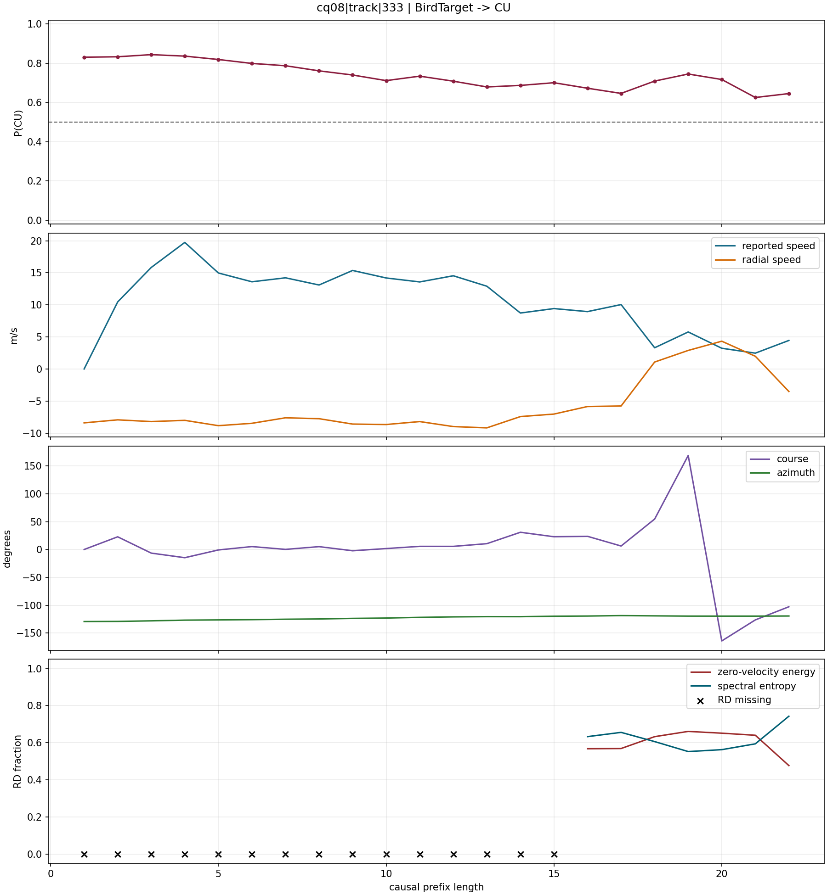
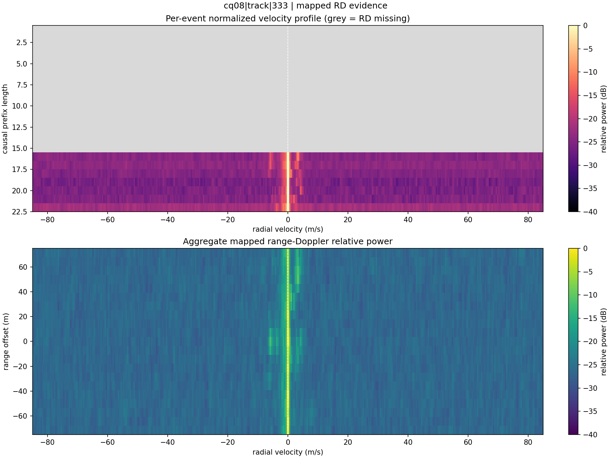
event CSV | parent JSON
Source files
{
"track_csv": "F:\\Project\\RadarInsight\\data\\processed\\cq08_tracks\\cq08__track__333.csv",
"cq08_track_file": "F:\\Project\\RadarInsight\\OriData\\23\\CQ-08\\航迹\\Tracks_333_3_22.txt",
"cq08_point_file": "F:\\Project\\RadarInsight\\OriData\\23\\CQ-08\\点迹\\PointTracks_333_3_22.txt",
"cq08_raw_echo_file": "F:\\Project\\RadarInsight\\OriData\\23\\CQ-08\\原始回波\\333_Label_3.dat",
"rd_tensor": "F:\\Project\\RadarInsight\\data\\processed\\cq08_rd_physical_canonical_v3_1\\cq08__track__333_rd_tensor.npz",
"rd_mat_files": [
"F:\\Project\\RadarInsight\\OriData\\23\\CQ-08\\MAT\\20250616182525_DAUR_RD_Bird_0001_333.mat",
"F:\\Project\\RadarInsight\\OriData\\23\\CQ-08\\MAT\\20250616182525_DAUR_RD_Bird_0002_333.mat",
"F:\\Project\\RadarInsight\\OriData\\23\\CQ-08\\MAT\\20250616182525_DAUR_RD_Bird_0003_333.mat",
"F:\\Project\\RadarInsight\\OriData\\23\\CQ-08\\MAT\\20250616182525_DAUR_RD_Bird_0004_333.mat",
"F:\\Project\\RadarInsight\\OriData\\23\\CQ-08\\MAT\\20250616182525_DAUR_RD_Bird_0005_333.mat",
"F:\\Project\\RadarInsight\\OriData\\23\\CQ-08\\MAT\\20250616182525_DAUR_RD_Bird_0006_333.mat",
"F:\\Project\\RadarInsight\\OriData\\23\\CQ-08\\MAT\\20250616182525_DAUR_RD_Bird_0007_333.mat",
"F:\\Project\\RadarInsight\\OriData\\23\\CQ-08\\MAT\\20250616182525_DAUR_RD_Bird_0008_333.mat",
"F:\\Project\\RadarInsight\\OriData\\23\\CQ-08\\MAT\\20250616182525_DAUR_RD_Bird_0009_333.mat",
"F:\\Project\\RadarInsight\\OriData\\23\\CQ-08\\MAT\\20250616182525_DAUR_RD_Bird_0010_333.mat",
"F:\\Project\\RadarInsight\\OriData\\23\\CQ-08\\MAT\\20250616182525_DAUR_RD_Bird_0011_333.mat",
"F:\\Project\\RadarInsight\\OriData\\23\\CQ-08\\MAT\\20250616182525_DAUR_RD_Bird_0012_333.mat",
"F:\\Project\\RadarInsight\\OriData\\23\\CQ-08\\MAT\\20250616182525_DAUR_RD_Bird_0013_333.mat",
"F:\\Project\\RadarInsight\\OriData\\23\\CQ-08\\MAT\\20250616182525_DAUR_RD_Bird_0014_333.mat",
"F:\\Project\\RadarInsight\\OriData\\23\\CQ-08\\MAT\\20250616182525_DAUR_RD_Bird_0015_333.mat",
"F:\\Project\\RadarInsight\\OriData\\23\\CQ-08\\MAT\\20250616182525_DAUR_RD_Bird_0016_333.mat",
"F:\\Project\\RadarInsight\\OriData\\23\\CQ-08\\MAT\\20250616182525_DAUR_RD_Bird_0017_333.mat",
"F:\\Project\\RadarInsight\\OriData\\23\\CQ-08\\MAT\\20250616182525_DAUR_RD_Bird_0018_333.mat",
"F:\\Project\\RadarInsight\\OriData\\23\\CQ-08\\MAT\\20250616182525_DAUR_RD_Bird_0019_333.mat",
"F:\\Project\\RadarInsight\\OriData\\23\\CQ-08\\MAT\\20250616182525_DAUR_RD_Bird_0020_333.mat",
"F:\\Project\\RadarInsight\\OriData\\23\\CQ-08\\MAT\\20250616182525_DAUR_RD_Bird_0021_333.mat",
"F:\\Project\\RadarInsight\\OriData\\23\\CQ-08\\MAT\\20250616182525_DAUR_RD_Bird_0022_333.mat"
]
}cq08|track|845
Current label: BirdTarget V10 final route: CU confidence: 0.9218
Events: 20 RD: 20/20 (full)
Automatic attention flags: H, I, G, H, _, C, O, N, F, I, D, E, N, C, E, _, E, R, R, O, R, ;, R, O, U, T, E, _, C, O, N, S, T, A, N, T, _, F, R, O, M, _, F, I, R, S, T, _, P, R, E, F, I, X
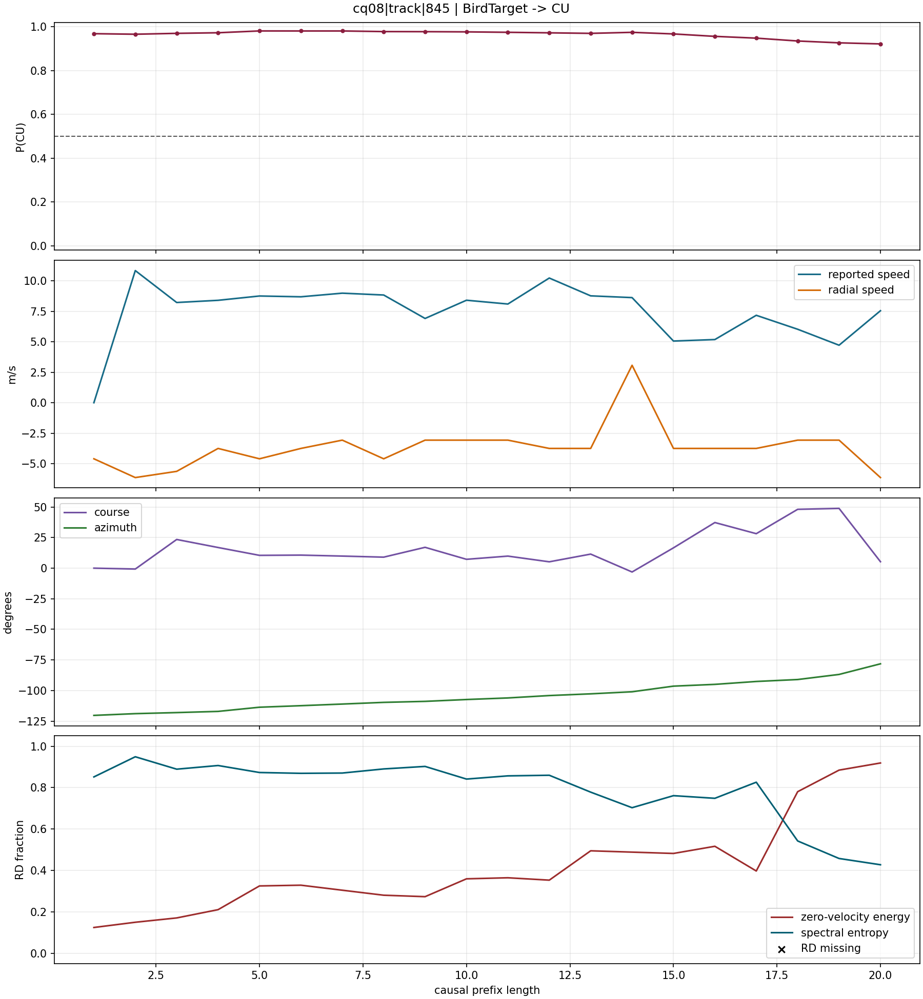
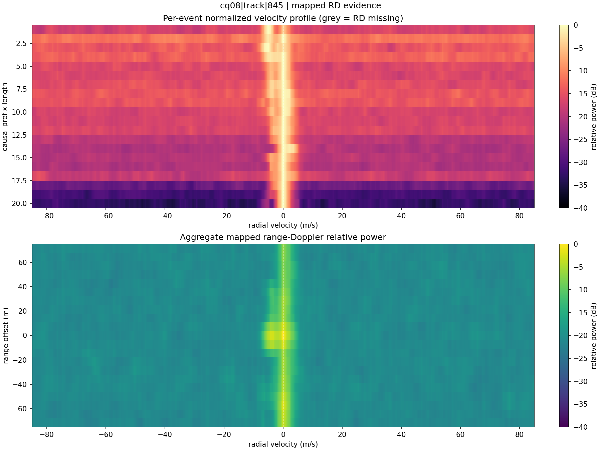
event CSV | parent JSON
Source files
{
"track_csv": "F:\\Project\\RadarInsight\\data\\processed\\cq08_tracks\\cq08__track__845.csv",
"cq08_track_file": "F:\\Project\\RadarInsight\\OriData\\23\\CQ-08\\航迹\\Tracks_845_3_20.txt",
"cq08_point_file": "F:\\Project\\RadarInsight\\OriData\\23\\CQ-08\\点迹\\PointTracks_845_3_20.txt",
"cq08_raw_echo_file": "F:\\Project\\RadarInsight\\OriData\\23\\CQ-08\\原始回波\\845_Label_3.dat",
"rd_tensor": "F:\\Project\\RadarInsight\\data\\processed\\cq08_rd_physical_canonical_v3_1\\cq08__track__845_rd_tensor.npz",
"rd_mat_files": [
"F:\\Project\\RadarInsight\\OriData\\23\\CQ-08\\MAT\\20250616192805_DAUR_RD_Bird_0001_845.mat",
"F:\\Project\\RadarInsight\\OriData\\23\\CQ-08\\MAT\\20250616192805_DAUR_RD_Bird_0002_845.mat",
"F:\\Project\\RadarInsight\\OriData\\23\\CQ-08\\MAT\\20250616192805_DAUR_RD_Bird_0003_845.mat",
"F:\\Project\\RadarInsight\\OriData\\23\\CQ-08\\MAT\\20250616192805_DAUR_RD_Bird_0004_845.mat",
"F:\\Project\\RadarInsight\\OriData\\23\\CQ-08\\MAT\\20250616192805_DAUR_RD_Bird_0005_845.mat",
"F:\\Project\\RadarInsight\\OriData\\23\\CQ-08\\MAT\\20250616192805_DAUR_RD_Bird_0006_845.mat",
"F:\\Project\\RadarInsight\\OriData\\23\\CQ-08\\MAT\\20250616192805_DAUR_RD_Bird_0007_845.mat",
"F:\\Project\\RadarInsight\\OriData\\23\\CQ-08\\MAT\\20250616192805_DAUR_RD_Bird_0008_845.mat",
"F:\\Project\\RadarInsight\\OriData\\23\\CQ-08\\MAT\\20250616192805_DAUR_RD_Bird_0009_845.mat",
"F:\\Project\\RadarInsight\\OriData\\23\\CQ-08\\MAT\\20250616192805_DAUR_RD_Bird_0010_845.mat",
"F:\\Project\\RadarInsight\\OriData\\23\\CQ-08\\MAT\\20250616192805_DAUR_RD_Bird_0011_845.mat",
"F:\\Project\\RadarInsight\\OriData\\23\\CQ-08\\MAT\\20250616192805_DAUR_RD_Bird_0012_845.mat",
"F:\\Project\\RadarInsight\\OriData\\23\\CQ-08\\MAT\\20250616192805_DAUR_RD_Bird_0013_845.mat",
"F:\\Project\\RadarInsight\\OriData\\23\\CQ-08\\MAT\\20250616192805_DAUR_RD_Bird_0014_845.mat",
"F:\\Project\\RadarInsight\\OriData\\23\\CQ-08\\MAT\\20250616192805_DAUR_RD_Bird_0015_845.mat",
"F:\\Project\\RadarInsight\\OriData\\23\\CQ-08\\MAT\\20250616192805_DAUR_RD_Bird_0016_845.mat",
"F:\\Project\\RadarInsight\\OriData\\23\\CQ-08\\MAT\\20250616192805_DAUR_RD_Bird_0017_845.mat",
"F:\\Project\\RadarInsight\\OriData\\23\\CQ-08\\MAT\\20250616192805_DAUR_RD_Bird_0018_845.mat",
"F:\\Project\\RadarInsight\\OriData\\23\\CQ-08\\MAT\\20250616192805_DAUR_RD_Bird_0019_845.mat",
"F:\\Project\\RadarInsight\\OriData\\23\\CQ-08\\MAT\\20250616192805_DAUR_RD_Bird_0020_845.mat",
"F:\\Project\\RadarInsight\\OriData\\23\\CQ-08\\MAT\\20250616192805_DAUR_RD_Bird_0021_845.mat",
"F:\\Project\\RadarInsight\\OriData\\23\\CQ-08\\MAT\\20250616192805_DAUR_RD_Bird_0022_845.mat",
"F:\\Project\\RadarInsight\\OriData\\23\\CQ-08\\MAT\\20250616192805_DAUR_RD_Bird_0023_845.mat",
"F:\\Project\\RadarInsight\\OriData\\23\\CQ-08\\MAT\\20250616192805_DAUR_RD_Bird_0024_845.mat",
"F:\\Project\\RadarInsight\\OriData\\23\\CQ-08\\MAT\\20250616192805_DAUR_RD_Bird_0025_845.mat",
"F:\\Project\\RadarInsight\\OriData\\23\\CQ-08\\MAT\\20250616192805_DAUR_RD_Bird_0026_845.mat",
"F:\\Project\\RadarInsight\\OriData\\23\\CQ-08\\MAT\\20250616192805_DAUR_RD_Bird_0027_845.mat",
"F:\\Project\\RadarInsight\\OriData\\23\\CQ-08\\MAT\\20250616192805_DAUR_RD_Bird_0028_845.mat",
"F:\\Project\\RadarInsight\\OriData\\23\\CQ-08\\MAT\\20250616192805_DAUR_RD_Bird_0029_845.mat",
"F:\\Project\\RadarInsight\\OriData\\23\\CQ-08\\MAT\\20250616192805_DAUR_RD_Bird_0030_845.mat",
"F:\\Project\\RadarInsight\\OriData\\23\\CQ-08\\MAT\\20250616192805_DAUR_RD_Bird_0031_845.mat",
"F:\\Project\\RadarInsight\\OriData\\23\\CQ-08\\MAT\\20250616192805_DAUR_RD_Bird_0032_845.mat",
"F:\\Project\\RadarInsight\\OriData\\23\\CQ-08\\MAT\\20250616192805_DAUR_RD_Bird_0033_845.mat",
"F:\\Project\\RadarInsight\\OriData\\23\\CQ-08\\MAT\\20250616192805_DAUR_RD_Bird_0034_845.mat",
"F:\\Project\\RadarInsight\\OriData\\23\\CQ-08\\MAT\\20250616192805_DAUR_RD_Bird_0035_845.mat",
"F:\\Project\\RadarInsight\\OriData\\23\\CQ-08\\MAT\\20250616192805_DAUR_RD_Bird_0036_845.mat",
"F:\\Project\\RadarInsight\\OriData\\23\\CQ-08\\MAT\\20250616192805_DAUR_RD_Bird_0037_845.mat",
"F:\\Project\\RadarInsight\\OriData\\23\\CQ-08\\MAT\\20250616192805_DAUR_RD_Bird_0038_845.mat",
"F:\\Project\\RadarInsight\\OriData\\23\\CQ-08\\MAT\\20250616192805_DAUR_RD_Bird_0039_845.mat",
"F:\\Project\\RadarInsight\\OriData\\23\\CQ-08\\MAT\\20250616192805_DAUR_RD_Bird_0040_845.mat",
"F:\\Project\\RadarInsight\\OriData\\23\\CQ-08\\MAT\\20250616192805_DAUR_RD_Bird_0041_845.mat",
"F:\\Project\\RadarInsight\\OriData\\23\\CQ-08\\MAT\\20250616192805_DAUR_RD_Bird_0042_845.mat",
"F:\\Project\\RadarInsight\\OriData\\23\\CQ-08\\MAT\\20250616192805_DAUR_RD_Bird_0043_845.mat",
"F:\\Project\\RadarInsight\\OriData\\23\\CQ-08\\MAT\\20250616192805_DAUR_RD_Bird_0044_845.mat",
"F:\\Project\\RadarInsight\\OriData\\23\\CQ-08\\MAT\\20250616192805_DAUR_RD_Bird_0045_845.mat",
"F:\\Project\\RadarInsight\\OriData\\23\\CQ-08\\MAT\\20250616192805_DAUR_RD_Bird_0046_845.mat",
"F:\\Project\\RadarInsight\\OriData\\23\\CQ-08\\MAT\\20250616192805_DAUR_RD_Bird_0047_845.mat",
"F:\\Project\\RadarInsight\\OriData\\23\\CQ-08\\MAT\\20250616192805_DAUR_RD_Bird_0048_845.mat",
"F:\\Project\\RadarInsight\\OriData\\23\\CQ-08\\MAT\\20250616192805_DAUR_RD_Bird_0049_845.mat",
"F:\\Project\\RadarInsight\\OriData\\23\\CQ-08\\MAT\\20250616192805_DAUR_RD_Bird_0050_845.mat",
"F:\\Project\\RadarInsight\\OriData\\23\\CQ-08\\MAT\\20250616192805_DAUR_RD_Bird_0051_845.mat",
"F:\\Project\\RadarInsight\\OriData\\23\\CQ-08\\MAT\\20250616192805_DAUR_RD_Bird_0052_845.mat",
"F:\\Project\\RadarInsight\\OriData\\23\\CQ-08\\MAT\\20250616192805_DAUR_RD_Bird_0053_845.mat",
"F:\\Project\\RadarInsight\\OriData\\23\\CQ-08\\MAT\\20250616192805_DAUR_RD_Bird_0054_845.mat",
"F:\\Project\\RadarInsight\\OriData\\23\\CQ-08\\MAT\\20250616192805_DAUR_RD_Bird_0055_845.mat",
"F:\\Project\\RadarInsight\\OriData\\23\\CQ-08\\MAT\\20250616192805_DAUR_RD_Bird_0056_845.mat",
"F:\\Project\\RadarInsight\\OriData\\23\\CQ-08\\MAT\\20250616192805_DAUR_RD_Bird_0057_845.mat",
"F:\\Project\\RadarInsight\\OriData\\23\\CQ-08\\MAT\\20250616192805_DAUR_RD_Bird_0058_845.mat",
"F:\\Project\\RadarInsight\\OriData\\23\\CQ-08\\MAT\\20250616192805_DAUR_RD_Bird_0059_845.mat",
"F:\\Project\\RadarInsight\\OriData\\23\\CQ-08\\MAT\\20250616192805_DAUR_RD_Bird_0060_845.mat",
"F:\\Project\\RadarInsight\\OriData\\23\\CQ-08\\MAT\\20250616192805_DAUR_RD_Bird_0061_845.mat",
"F:\\Project\\RadarInsight\\OriData\\23\\CQ-08\\MAT\\20250616192805_DAUR_RD_Bird_0062_845.mat",
"F:\\Project\\RadarInsight\\OriData\\23\\CQ-08\\MAT\\20250616192805_DAUR_RD_Bird_0063_845.mat",
"F:\\Project\\RadarInsight\\OriData\\23\\CQ-08\\MAT\\20250616192805_DAUR_RD_Bird_0064_845.mat",
"F:\\Project\\RadarInsight\\OriData\\23\\CQ-08\\MAT\\20250616192805_DAUR_RD_Bird_0065_845.mat",
"F:\\Project\\RadarInsight\\OriData\\23\\CQ-08\\MAT\\20250616192805_DAUR_RD_Bird_0066_845.mat",
"F:\\Project\\RadarInsight\\OriData\\23\\CQ-08\\MAT\\20250616192805_DAUR_RD_Bird_0067_845.mat",
"F:\\Project\\RadarInsight\\OriData\\23\\CQ-08\\MAT\\20250616192805_DAUR_RD_Bird_0068_845.mat",
"F:\\Project\\RadarInsight\\OriData\\23\\CQ-08\\MAT\\20250616192805_DAUR_RD_Bird_0069_845.mat",
"F:\\Project\\RadarInsight\\OriData\\23\\CQ-08\\MAT\\20250616192805_DAUR_RD_Bird_0070_845.mat",
"F:\\Project\\RadarInsight\\OriData\\23\\CQ-08\\MAT\\20250616192805_DAUR_RD_Bird_0071_845.mat",
"F:\\Project\\RadarInsight\\OriData\\23\\CQ-08\\MAT\\20250616192805_DAUR_RD_Bird_0072_845.mat",
"F:\\Project\\RadarInsight\\OriData\\23\\CQ-08\\MAT\\20250616192805_DAUR_RD_Bird_0073_845.mat",
"F:\\Project\\RadarInsight\\OriData\\23\\CQ-08\\MAT\\20250616192805_DAUR_RD_Bird_0074_845.mat",
"F:\\Project\\RadarInsight\\OriData\\23\\CQ-08\\MAT\\20250616192805_DAUR_RD_Bird_0075_845.mat",
"F:\\Project\\RadarInsight\\OriData\\23\\CQ-08\\MAT\\20250616192805_DAUR_RD_Bird_0076_845.mat",
"F:\\Project\\RadarInsight\\OriData\\23\\CQ-08\\MAT\\20250616192805_DAUR_RD_Bird_0077_845.mat",
"F:\\Project\\RadarInsight\\OriData\\23\\CQ-08\\MAT\\20250616192805_DAUR_RD_Bird_0078_845.mat",
"F:\\Project\\RadarInsight\\OriData\\23\\CQ-08\\MAT\\20250616192805_DAUR_RD_Bird_0079_845.mat",
"F:\\Project\\RadarInsight\\OriData\\23\\CQ-08\\MAT\\20250616192805_DAUR_RD_Bird_0080_845.mat",
"F:\\Project\\RadarInsight\\OriData\\23\\CQ-08\\MAT\\20250616192805_DAUR_RD_Bird_0081_845.mat",
"F:\\Project\\RadarInsight\\OriData\\23\\CQ-08\\MAT\\20250616192805_DAUR_RD_Bird_0082_845.mat",
"F:\\Project\\RadarInsight\\OriData\\23\\CQ-08\\MAT\\20250616192805_DAUR_RD_Bird_0083_845.mat",
"F:\\Project\\RadarInsight\\OriData\\23\\CQ-08\\MAT\\20250616192805_DAUR_RD_Bird_0084_845.mat",
"F:\\Project\\RadarInsight\\OriData\\23\\CQ-08\\MAT\\20250616192805_DAUR_RD_Bird_0085_845.mat",
"F:\\Project\\RadarInsight\\OriData\\23\\CQ-08\\MAT\\20250616192805_DAUR_RD_Bird_0086_845.mat",
"F:\\Project\\RadarInsight\\OriData\\23\\CQ-08\\MAT\\20250616192805_DAUR_RD_Bird_0087_845.mat",
"F:\\Project\\RadarInsight\\OriData\\23\\CQ-08\\MAT\\20250616192805_DAUR_RD_Bird_0088_845.mat"
]
}cq08|track|852
Current label: BirdTarget V10 final route: CU confidence: 0.9782
Events: 19 RD: 19/19 (full)
Automatic attention flags: H, I, G, H, _, C, O, N, F, I, D, E, N, C, E, _, E, R, R, O, R, ;, R, O, U, T, E, _, C, O, N, S, T, A, N, T, _, F, R, O, M, _, F, I, R, S, T, _, P, R, E, F, I, X
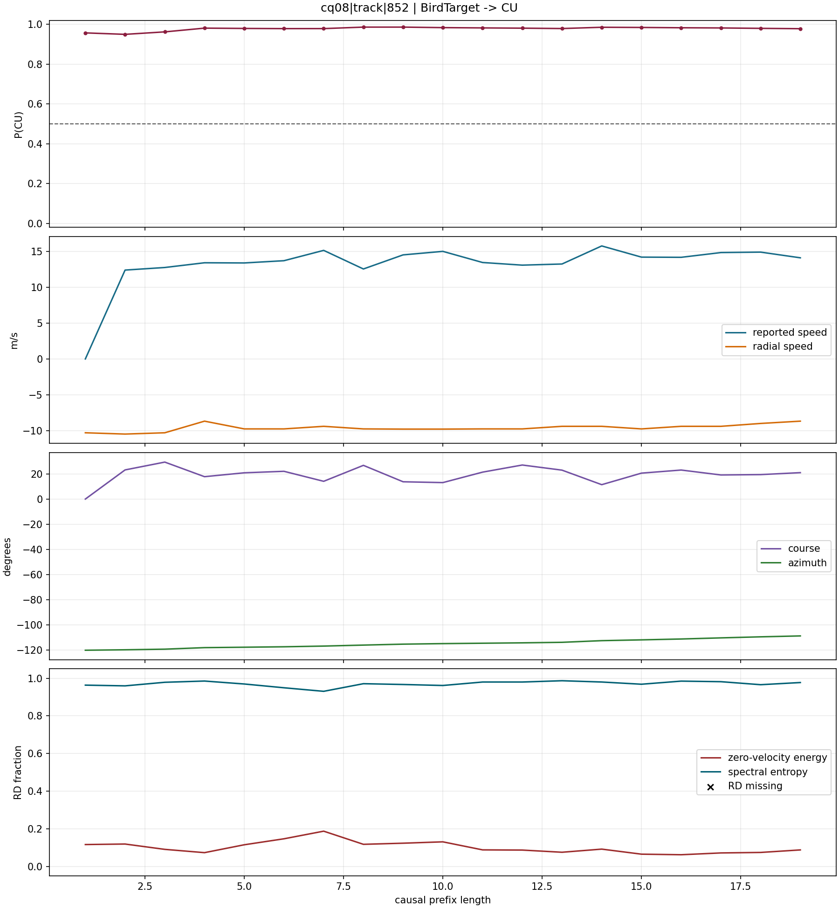
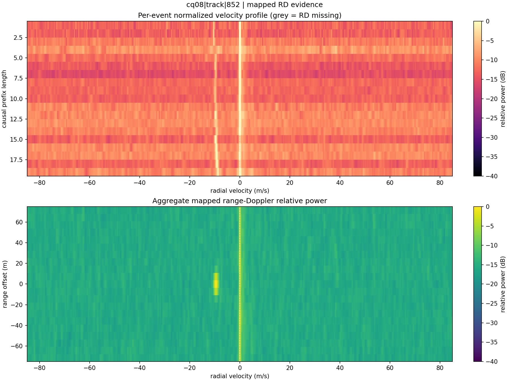
event CSV | parent JSON
Source files
{
"track_csv": "F:\\Project\\RadarInsight\\data\\processed\\cq08_tracks\\cq08__track__852.csv",
"cq08_track_file": "F:\\Project\\RadarInsight\\OriData\\23\\CQ-08\\航迹\\Tracks_852_3_19.txt",
"cq08_point_file": "F:\\Project\\RadarInsight\\OriData\\23\\CQ-08\\点迹\\PointTracks_852_3_19.txt",
"cq08_raw_echo_file": "F:\\Project\\RadarInsight\\OriData\\23\\CQ-08\\原始回波\\852_Label_3.dat",
"rd_tensor": "F:\\Project\\RadarInsight\\data\\processed\\cq08_rd_physical_canonical_v3_1\\cq08__track__852_rd_tensor.npz",
"rd_mat_files": [
"F:\\Project\\RadarInsight\\OriData\\23\\CQ-08\\MAT\\20250616193120_DAUR_RD_Bird_0001_852.mat",
"F:\\Project\\RadarInsight\\OriData\\23\\CQ-08\\MAT\\20250616193120_DAUR_RD_Bird_0002_852.mat",
"F:\\Project\\RadarInsight\\OriData\\23\\CQ-08\\MAT\\20250616193120_DAUR_RD_Bird_0003_852.mat",
"F:\\Project\\RadarInsight\\OriData\\23\\CQ-08\\MAT\\20250616193120_DAUR_RD_Bird_0004_852.mat",
"F:\\Project\\RadarInsight\\OriData\\23\\CQ-08\\MAT\\20250616193120_DAUR_RD_Bird_0005_852.mat",
"F:\\Project\\RadarInsight\\OriData\\23\\CQ-08\\MAT\\20250616193120_DAUR_RD_Bird_0006_852.mat",
"F:\\Project\\RadarInsight\\OriData\\23\\CQ-08\\MAT\\20250616193120_DAUR_RD_Bird_0007_852.mat",
"F:\\Project\\RadarInsight\\OriData\\23\\CQ-08\\MAT\\20250616193120_DAUR_RD_Bird_0008_852.mat",
"F:\\Project\\RadarInsight\\OriData\\23\\CQ-08\\MAT\\20250616193120_DAUR_RD_Bird_0009_852.mat",
"F:\\Project\\RadarInsight\\OriData\\23\\CQ-08\\MAT\\20250616193120_DAUR_RD_Bird_0010_852.mat",
"F:\\Project\\RadarInsight\\OriData\\23\\CQ-08\\MAT\\20250616193120_DAUR_RD_Bird_0011_852.mat",
"F:\\Project\\RadarInsight\\OriData\\23\\CQ-08\\MAT\\20250616193120_DAUR_RD_Bird_0012_852.mat",
"F:\\Project\\RadarInsight\\OriData\\23\\CQ-08\\MAT\\20250616193120_DAUR_RD_Bird_0013_852.mat",
"F:\\Project\\RadarInsight\\OriData\\23\\CQ-08\\MAT\\20250616193120_DAUR_RD_Bird_0014_852.mat",
"F:\\Project\\RadarInsight\\OriData\\23\\CQ-08\\MAT\\20250616193120_DAUR_RD_Bird_0015_852.mat",
"F:\\Project\\RadarInsight\\OriData\\23\\CQ-08\\MAT\\20250616193120_DAUR_RD_Bird_0016_852.mat",
"F:\\Project\\RadarInsight\\OriData\\23\\CQ-08\\MAT\\20250616193120_DAUR_RD_Bird_0017_852.mat",
"F:\\Project\\RadarInsight\\OriData\\23\\CQ-08\\MAT\\20250616193120_DAUR_RD_Bird_0018_852.mat",
"F:\\Project\\RadarInsight\\OriData\\23\\CQ-08\\MAT\\20250616193120_DAUR_RD_Bird_0019_852.mat",
"F:\\Project\\RadarInsight\\OriData\\23\\CQ-08\\MAT\\20250616193120_DAUR_RD_Bird_0020_852.mat",
"F:\\Project\\RadarInsight\\OriData\\23\\CQ-08\\MAT\\20250616193120_DAUR_RD_Bird_0021_852.mat",
"F:\\Project\\RadarInsight\\OriData\\23\\CQ-08\\MAT\\20250616193120_DAUR_RD_Bird_0022_852.mat",
"F:\\Project\\RadarInsight\\OriData\\23\\CQ-08\\MAT\\20250616193120_DAUR_RD_Bird_0023_852.mat",
"F:\\Project\\RadarInsight\\OriData\\23\\CQ-08\\MAT\\20250616193120_DAUR_RD_Bird_0024_852.mat",
"F:\\Project\\RadarInsight\\OriData\\23\\CQ-08\\MAT\\20250616193120_DAUR_RD_Bird_0025_852.mat",
"F:\\Project\\RadarInsight\\OriData\\23\\CQ-08\\MAT\\20250616193120_DAUR_RD_Bird_0026_852.mat",
"F:\\Project\\RadarInsight\\OriData\\23\\CQ-08\\MAT\\20250616193120_DAUR_RD_Bird_0027_852.mat",
"F:\\Project\\RadarInsight\\OriData\\23\\CQ-08\\MAT\\20250616193120_DAUR_RD_Bird_0028_852.mat",
"F:\\Project\\RadarInsight\\OriData\\23\\CQ-08\\MAT\\20250616193120_DAUR_RD_Bird_0029_852.mat",
"F:\\Project\\RadarInsight\\OriData\\23\\CQ-08\\MAT\\20250616193120_DAUR_RD_Bird_0030_852.mat",
"F:\\Project\\RadarInsight\\OriData\\23\\CQ-08\\MAT\\20250616193120_DAUR_RD_Bird_0031_852.mat",
"F:\\Project\\RadarInsight\\OriData\\23\\CQ-08\\MAT\\20250616193120_DAUR_RD_Bird_0032_852.mat",
"F:\\Project\\RadarInsight\\OriData\\23\\CQ-08\\MAT\\20250616193120_DAUR_RD_Bird_0033_852.mat",
"F:\\Project\\RadarInsight\\OriData\\23\\CQ-08\\MAT\\20250616193120_DAUR_RD_Bird_0034_852.mat",
"F:\\Project\\RadarInsight\\OriData\\23\\CQ-08\\MAT\\20250616193120_DAUR_RD_Bird_0035_852.mat",
"F:\\Project\\RadarInsight\\OriData\\23\\CQ-08\\MAT\\20250616193120_DAUR_RD_Bird_0036_852.mat",
"F:\\Project\\RadarInsight\\OriData\\23\\CQ-08\\MAT\\20250616193120_DAUR_RD_Bird_0037_852.mat",
"F:\\Project\\RadarInsight\\OriData\\23\\CQ-08\\MAT\\20250616193120_DAUR_RD_Bird_0038_852.mat",
"F:\\Project\\RadarInsight\\OriData\\23\\CQ-08\\MAT\\20250616193120_DAUR_RD_Bird_0039_852.mat",
"F:\\Project\\RadarInsight\\OriData\\23\\CQ-08\\MAT\\20250616193120_DAUR_RD_Bird_0040_852.mat",
"F:\\Project\\RadarInsight\\OriData\\23\\CQ-08\\MAT\\20250616193120_DAUR_RD_Bird_0041_852.mat",
"F:\\Project\\RadarInsight\\OriData\\23\\CQ-08\\MAT\\20250616193120_DAUR_RD_Bird_0042_852.mat",
"F:\\Project\\RadarInsight\\OriData\\23\\CQ-08\\MAT\\20250616193120_DAUR_RD_Bird_0043_852.mat",
"F:\\Project\\RadarInsight\\OriData\\23\\CQ-08\\MAT\\20250616193120_DAUR_RD_Bird_0044_852.mat",
"F:\\Project\\RadarInsight\\OriData\\23\\CQ-08\\MAT\\20250616193120_DAUR_RD_Bird_0045_852.mat",
"F:\\Project\\RadarInsight\\OriData\\23\\CQ-08\\MAT\\20250616193120_DAUR_RD_Bird_0046_852.mat",
"F:\\Project\\RadarInsight\\OriData\\23\\CQ-08\\MAT\\20250616193120_DAUR_RD_Bird_0047_852.mat",
"F:\\Project\\RadarInsight\\OriData\\23\\CQ-08\\MAT\\20250616193120_DAUR_RD_Bird_0048_852.mat",
"F:\\Project\\RadarInsight\\OriData\\23\\CQ-08\\MAT\\20250616193120_DAUR_RD_Bird_0049_852.mat",
"F:\\Project\\RadarInsight\\OriData\\23\\CQ-08\\MAT\\20250616193120_DAUR_RD_Bird_0050_852.mat",
"F:\\Project\\RadarInsight\\OriData\\23\\CQ-08\\MAT\\20250616193120_DAUR_RD_Bird_0051_852.mat",
"F:\\Project\\RadarInsight\\OriData\\23\\CQ-08\\MAT\\20250616193120_DAUR_RD_Bird_0052_852.mat"
]
}cq08|track|1547
Current label: UnknownTarget V10 final route: DBB confidence: 0.6845
Events: 24 RD: 24/24 (full)
Automatic attention flags: U, N, K, N, O, W, N, _, C, L, O, S, E, D, _, S, E, T, _, N, O, T, _, R, E, J, E, C, T
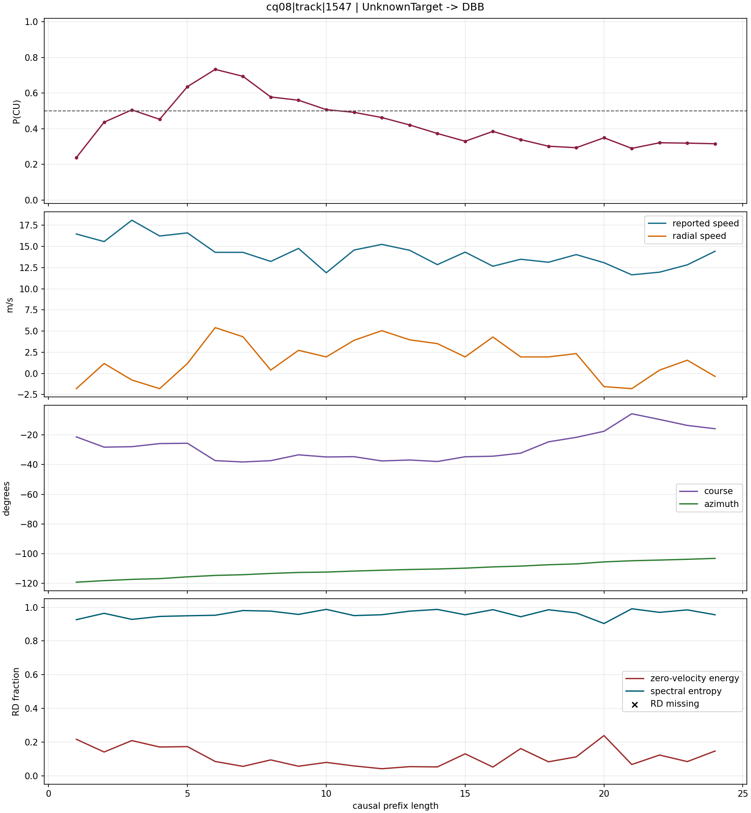
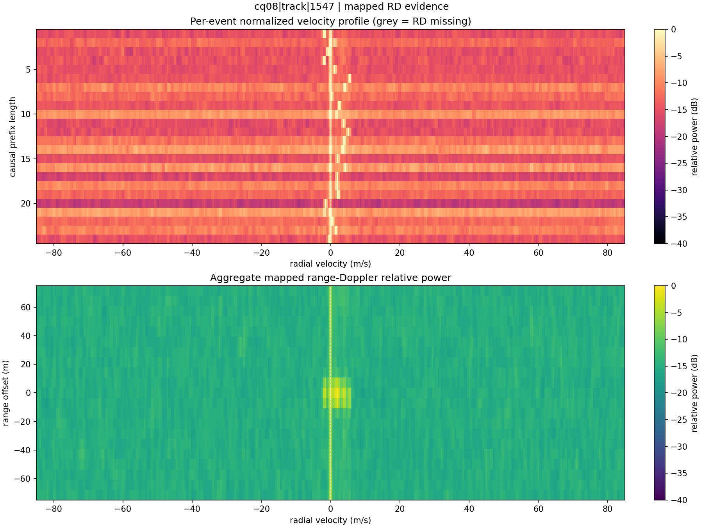
event CSV | parent JSON
Source files
{
"track_csv": "F:\\Project\\RadarInsight\\data\\processed\\cq08_tracks\\cq08__track__1547.csv",
"cq08_track_file": "F:\\Project\\RadarInsight\\OriData\\23\\CQ-08\\航迹\\Tracks_1547_6_24.txt",
"cq08_point_file": "F:\\Project\\RadarInsight\\OriData\\23\\CQ-08\\点迹\\PointTracks_1547_6_24.txt",
"cq08_raw_echo_file": "F:\\Project\\RadarInsight\\OriData\\23\\CQ-08\\原始回波\\1547_Label_6.dat",
"rd_tensor": "F:\\Project\\RadarInsight\\data\\processed\\cq08_rd_physical_canonical_v3_1\\cq08__track__1547_rd_tensor.npz",
"rd_mat_files": [
"F:\\Project\\RadarInsight\\OriData\\23\\CQ-08\\MAT\\20250616124632_DAUR_RD_Other_0001_1547.mat",
"F:\\Project\\RadarInsight\\OriData\\23\\CQ-08\\MAT\\20250616124632_DAUR_RD_Other_0002_1547.mat",
"F:\\Project\\RadarInsight\\OriData\\23\\CQ-08\\MAT\\20250616124632_DAUR_RD_Other_0003_1547.mat",
"F:\\Project\\RadarInsight\\OriData\\23\\CQ-08\\MAT\\20250616124632_DAUR_RD_Other_0004_1547.mat",
"F:\\Project\\RadarInsight\\OriData\\23\\CQ-08\\MAT\\20250616124632_DAUR_RD_Other_0005_1547.mat",
"F:\\Project\\RadarInsight\\OriData\\23\\CQ-08\\MAT\\20250616124632_DAUR_RD_Other_0006_1547.mat",
"F:\\Project\\RadarInsight\\OriData\\23\\CQ-08\\MAT\\20250616124632_DAUR_RD_Other_0007_1547.mat",
"F:\\Project\\RadarInsight\\OriData\\23\\CQ-08\\MAT\\20250616124632_DAUR_RD_Other_0008_1547.mat",
"F:\\Project\\RadarInsight\\OriData\\23\\CQ-08\\MAT\\20250616124632_DAUR_RD_Other_0009_1547.mat",
"F:\\Project\\RadarInsight\\OriData\\23\\CQ-08\\MAT\\20250616124632_DAUR_RD_Other_0010_1547.mat",
"F:\\Project\\RadarInsight\\OriData\\23\\CQ-08\\MAT\\20250616124632_DAUR_RD_Other_0011_1547.mat",
"F:\\Project\\RadarInsight\\OriData\\23\\CQ-08\\MAT\\20250616124632_DAUR_RD_Other_0012_1547.mat",
"F:\\Project\\RadarInsight\\OriData\\23\\CQ-08\\MAT\\20250616124632_DAUR_RD_Other_0013_1547.mat",
"F:\\Project\\RadarInsight\\OriData\\23\\CQ-08\\MAT\\20250616124632_DAUR_RD_Other_0014_1547.mat",
"F:\\Project\\RadarInsight\\OriData\\23\\CQ-08\\MAT\\20250616124632_DAUR_RD_Other_0015_1547.mat",
"F:\\Project\\RadarInsight\\OriData\\23\\CQ-08\\MAT\\20250616124632_DAUR_RD_Other_0016_1547.mat",
"F:\\Project\\RadarInsight\\OriData\\23\\CQ-08\\MAT\\20250616124632_DAUR_RD_Other_0017_1547.mat",
"F:\\Project\\RadarInsight\\OriData\\23\\CQ-08\\MAT\\20250616124632_DAUR_RD_Other_0018_1547.mat",
"F:\\Project\\RadarInsight\\OriData\\23\\CQ-08\\MAT\\20250616124632_DAUR_RD_Other_0019_1547.mat",
"F:\\Project\\RadarInsight\\OriData\\23\\CQ-08\\MAT\\20250616124632_DAUR_RD_Other_0020_1547.mat",
"F:\\Project\\RadarInsight\\OriData\\23\\CQ-08\\MAT\\20250616124632_DAUR_RD_Other_0021_1547.mat",
"F:\\Project\\RadarInsight\\OriData\\23\\CQ-08\\MAT\\20250616124632_DAUR_RD_Other_0022_1547.mat",
"F:\\Project\\RadarInsight\\OriData\\23\\CQ-08\\MAT\\20250616124632_DAUR_RD_Other_0023_1547.mat",
"F:\\Project\\RadarInsight\\OriData\\23\\CQ-08\\MAT\\20250616124632_DAUR_RD_Other_0024_1547.mat",
"F:\\Project\\RadarInsight\\OriData\\23\\CQ-08\\MAT\\20250616124632_DAUR_RD_Other_0025_1547.mat",
"F:\\Project\\RadarInsight\\OriData\\23\\CQ-08\\MAT\\20250616124632_DAUR_RD_Other_0026_1547.mat",
"F:\\Project\\RadarInsight\\OriData\\23\\CQ-08\\MAT\\20250616124632_DAUR_RD_Other_0027_1547.mat",
"F:\\Project\\RadarInsight\\OriData\\23\\CQ-08\\MAT\\20250616124632_DAUR_RD_Other_0028_1547.mat",
"F:\\Project\\RadarInsight\\OriData\\23\\CQ-08\\MAT\\20250616124632_DAUR_RD_Other_0029_1547.mat",
"F:\\Project\\RadarInsight\\OriData\\23\\CQ-08\\MAT\\20250616124632_DAUR_RD_Other_0030_1547.mat",
"F:\\Project\\RadarInsight\\OriData\\23\\CQ-08\\MAT\\20250616124632_DAUR_RD_Other_0031_1547.mat",
"F:\\Project\\RadarInsight\\OriData\\23\\CQ-08\\MAT\\20250616124632_DAUR_RD_Other_0032_1547.mat",
"F:\\Project\\RadarInsight\\OriData\\23\\CQ-08\\MAT\\20250616124632_DAUR_RD_Other_0033_1547.mat",
"F:\\Project\\RadarInsight\\OriData\\23\\CQ-08\\MAT\\20250616124632_DAUR_RD_Other_0034_1547.mat",
"F:\\Project\\RadarInsight\\OriData\\23\\CQ-08\\MAT\\20250616124632_DAUR_RD_Other_0035_1547.mat",
"F:\\Project\\RadarInsight\\OriData\\23\\CQ-08\\MAT\\20250616124632_DAUR_RD_Other_0036_1547.mat",
"F:\\Project\\RadarInsight\\OriData\\23\\CQ-08\\MAT\\20250616124632_DAUR_RD_Other_0037_1547.mat",
"F:\\Project\\RadarInsight\\OriData\\23\\CQ-08\\MAT\\20250616124632_DAUR_RD_Other_0038_1547.mat",
"F:\\Project\\RadarInsight\\OriData\\23\\CQ-08\\MAT\\20250616124632_DAUR_RD_Other_0039_1547.mat",
"F:\\Project\\RadarInsight\\OriData\\23\\CQ-08\\MAT\\20250616124632_DAUR_RD_Other_0040_1547.mat",
"F:\\Project\\RadarInsight\\OriData\\23\\CQ-08\\MAT\\20250616124632_DAUR_RD_Other_0041_1547.mat",
"F:\\Project\\RadarInsight\\OriData\\23\\CQ-08\\MAT\\20250616124632_DAUR_RD_Other_0042_1547.mat",
"F:\\Project\\RadarInsight\\OriData\\23\\CQ-08\\MAT\\20250616124632_DAUR_RD_Other_0043_1547.mat",
"F:\\Project\\RadarInsight\\OriData\\23\\CQ-08\\MAT\\20250616124632_DAUR_RD_Other_0044_1547.mat",
"F:\\Project\\RadarInsight\\OriData\\23\\CQ-08\\MAT\\20250616124632_DAUR_RD_Other_0045_1547.mat",
"F:\\Project\\RadarInsight\\OriData\\23\\CQ-08\\MAT\\20250616124632_DAUR_RD_Other_0046_1547.mat",
"F:\\Project\\RadarInsight\\OriData\\23\\CQ-08\\MAT\\20250616124632_DAUR_RD_Other_0047_1547.mat",
"F:\\Project\\RadarInsight\\OriData\\23\\CQ-08\\MAT\\20250616124632_DAUR_RD_Other_0048_1547.mat",
"F:\\Project\\RadarInsight\\OriData\\23\\CQ-08\\MAT\\20250616124632_DAUR_RD_Other_0049_1547.mat",
"F:\\Project\\RadarInsight\\OriData\\23\\CQ-08\\MAT\\20250616124632_DAUR_RD_Other_0050_1547.mat",
"F:\\Project\\RadarInsight\\OriData\\23\\CQ-08\\MAT\\20250616124632_DAUR_RD_Other_0051_1547.mat",
"F:\\Project\\RadarInsight\\OriData\\23\\CQ-08\\MAT\\20250616124632_DAUR_RD_Other_0052_1547.mat",
"F:\\Project\\RadarInsight\\OriData\\23\\CQ-08\\MAT\\20250616124632_DAUR_RD_Other_0053_1547.mat",
"F:\\Project\\RadarInsight\\OriData\\23\\CQ-08\\MAT\\20250616124632_DAUR_RD_Other_0054_1547.mat",
"F:\\Project\\RadarInsight\\OriData\\23\\CQ-08\\MAT\\20250616124632_DAUR_RD_Other_0055_1547.mat",
"F:\\Project\\RadarInsight\\OriData\\23\\CQ-08\\MAT\\20250616124632_DAUR_RD_Other_0056_1547.mat",
"F:\\Project\\RadarInsight\\OriData\\23\\CQ-08\\MAT\\20250616124632_DAUR_RD_Other_0057_1547.mat",
"F:\\Project\\RadarInsight\\OriData\\23\\CQ-08\\MAT\\20250616124632_DAUR_RD_Other_0058_1547.mat",
"F:\\Project\\RadarInsight\\OriData\\23\\CQ-08\\MAT\\20250616124632_DAUR_RD_Other_0059_1547.mat",
"F:\\Project\\RadarInsight\\OriData\\23\\CQ-08\\MAT\\20250616124632_DAUR_RD_Other_0060_1547.mat",
"F:\\Project\\RadarInsight\\OriData\\23\\CQ-08\\MAT\\20250616124632_DAUR_RD_Other_0061_1547.mat",
"F:\\Project\\RadarInsight\\OriData\\23\\CQ-08\\MAT\\20250616124632_DAUR_RD_Other_0062_1547.mat",
"F:\\Project\\RadarInsight\\OriData\\23\\CQ-08\\MAT\\20250616124632_DAUR_RD_Other_0063_1547.mat",
"F:\\Project\\RadarInsight\\OriData\\23\\CQ-08\\MAT\\20250616124632_DAUR_RD_Other_0064_1547.mat",
"F:\\Project\\RadarInsight\\OriData\\23\\CQ-08\\MAT\\20250616124632_DAUR_RD_Other_0065_1547.mat",
"F:\\Project\\RadarInsight\\OriData\\23\\CQ-08\\MAT\\20250616124632_DAUR_RD_Other_0066_1547.mat",
"F:\\Project\\RadarInsight\\OriData\\23\\CQ-08\\MAT\\20250616124632_DAUR_RD_Other_0067_1547.mat",
"F:\\Project\\RadarInsight\\OriData\\23\\CQ-08\\MAT\\20250616124632_DAUR_RD_Other_0068_1547.mat",
"F:\\Project\\RadarInsight\\OriData\\23\\CQ-08\\MAT\\20250616124632_DAUR_RD_Other_0069_1547.mat",
"F:\\Project\\RadarInsight\\OriData\\23\\CQ-08\\MAT\\20250616124632_DAUR_RD_Other_0070_1547.mat",
"F:\\Project\\RadarInsight\\OriData\\23\\CQ-08\\MAT\\20250616124632_DAUR_RD_Other_0071_1547.mat",
"F:\\Project\\RadarInsight\\OriData\\23\\CQ-08\\MAT\\20250616124632_DAUR_RD_Other_0072_1547.mat",
"F:\\Project\\RadarInsight\\OriData\\23\\CQ-08\\MAT\\20250616124632_DAUR_RD_Other_0073_1547.mat",
"F:\\Project\\RadarInsight\\OriData\\23\\CQ-08\\MAT\\20250616124632_DAUR_RD_Other_0074_1547.mat"
]
}cq08|track|2367
Current label: BirdTarget V10 final route: CU confidence: 0.9240
Events: 15 RD: 15/15 (full)
Automatic attention flags: H, I, G, H, _, C, O, N, F, I, D, E, N, C, E, _, E, R, R, O, R, ;, R, O, U, T, E, _, C, O, N, S, T, A, N, T, _, F, R, O, M, _, F, I, R, S, T, _, P, R, E, F, I, X
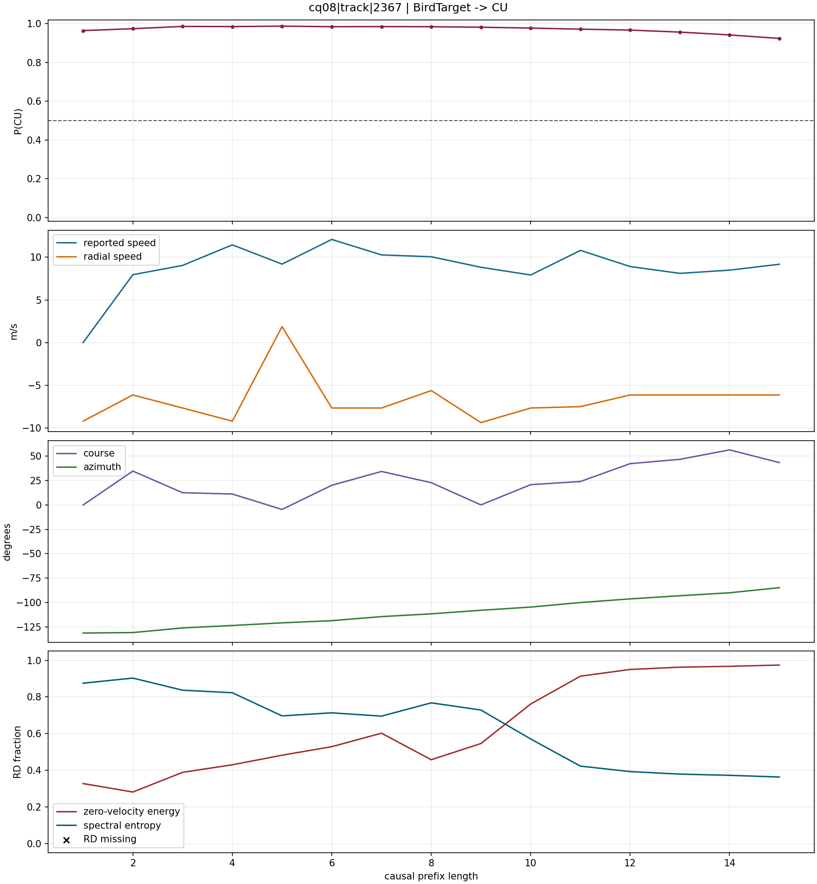
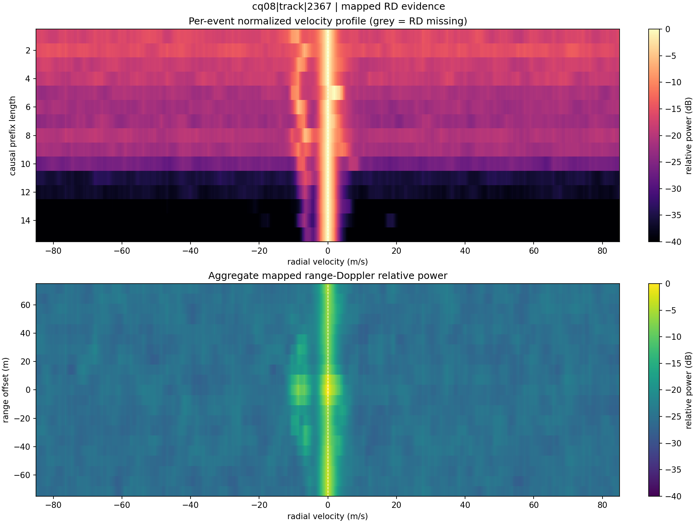
event CSV | parent JSON
Source files
{
"track_csv": "F:\\Project\\RadarInsight\\data\\processed\\cq08_tracks\\cq08__track__2367.csv",
"cq08_track_file": "F:\\Project\\RadarInsight\\OriData\\23\\CQ-08\\航迹\\Tracks_2367_3_15.txt",
"cq08_point_file": "F:\\Project\\RadarInsight\\OriData\\23\\CQ-08\\点迹\\PointTracks_2367_3_15.txt",
"cq08_raw_echo_file": "F:\\Project\\RadarInsight\\OriData\\23\\CQ-08\\原始回波\\2367_Label_3.dat",
"rd_tensor": "F:\\Project\\RadarInsight\\data\\processed\\cq08_rd_physical_canonical_v3_1\\cq08__track__2367_rd_tensor.npz",
"rd_mat_files": [
"F:\\Project\\RadarInsight\\OriData\\23\\CQ-08\\MAT\\20250616163902_DAUR_RD_Bird_0001_2367.mat",
"F:\\Project\\RadarInsight\\OriData\\23\\CQ-08\\MAT\\20250616163902_DAUR_RD_Bird_0002_2367.mat",
"F:\\Project\\RadarInsight\\OriData\\23\\CQ-08\\MAT\\20250616163902_DAUR_RD_Bird_0003_2367.mat",
"F:\\Project\\RadarInsight\\OriData\\23\\CQ-08\\MAT\\20250616163902_DAUR_RD_Bird_0004_2367.mat",
"F:\\Project\\RadarInsight\\OriData\\23\\CQ-08\\MAT\\20250616163902_DAUR_RD_Bird_0005_2367.mat",
"F:\\Project\\RadarInsight\\OriData\\23\\CQ-08\\MAT\\20250616163902_DAUR_RD_Bird_0006_2367.mat",
"F:\\Project\\RadarInsight\\OriData\\23\\CQ-08\\MAT\\20250616163902_DAUR_RD_Bird_0007_2367.mat",
"F:\\Project\\RadarInsight\\OriData\\23\\CQ-08\\MAT\\20250616163902_DAUR_RD_Bird_0008_2367.mat",
"F:\\Project\\RadarInsight\\OriData\\23\\CQ-08\\MAT\\20250616163902_DAUR_RD_Bird_0009_2367.mat",
"F:\\Project\\RadarInsight\\OriData\\23\\CQ-08\\MAT\\20250616163902_DAUR_RD_Bird_0010_2367.mat",
"F:\\Project\\RadarInsight\\OriData\\23\\CQ-08\\MAT\\20250616163902_DAUR_RD_Bird_0011_2367.mat",
"F:\\Project\\RadarInsight\\OriData\\23\\CQ-08\\MAT\\20250616163902_DAUR_RD_Bird_0012_2367.mat",
"F:\\Project\\RadarInsight\\OriData\\23\\CQ-08\\MAT\\20250616163902_DAUR_RD_Bird_0013_2367.mat",
"F:\\Project\\RadarInsight\\OriData\\23\\CQ-08\\MAT\\20250616163902_DAUR_RD_Bird_0014_2367.mat",
"F:\\Project\\RadarInsight\\OriData\\23\\CQ-08\\MAT\\20250616163902_DAUR_RD_Bird_0015_2367.mat",
"F:\\Project\\RadarInsight\\OriData\\23\\CQ-08\\MAT\\20250616163902_DAUR_RD_Bird_0016_2367.mat",
"F:\\Project\\RadarInsight\\OriData\\23\\CQ-08\\MAT\\20250616163902_DAUR_RD_Bird_0017_2367.mat",
"F:\\Project\\RadarInsight\\OriData\\23\\CQ-08\\MAT\\20250616163902_DAUR_RD_Bird_0018_2367.mat",
"F:\\Project\\RadarInsight\\OriData\\23\\CQ-08\\MAT\\20250616163902_DAUR_RD_Bird_0019_2367.mat",
"F:\\Project\\RadarInsight\\OriData\\23\\CQ-08\\MAT\\20250616163902_DAUR_RD_Bird_0020_2367.mat",
"F:\\Project\\RadarInsight\\OriData\\23\\CQ-08\\MAT\\20250616163902_DAUR_RD_Bird_0021_2367.mat",
"F:\\Project\\RadarInsight\\OriData\\23\\CQ-08\\MAT\\20250616163902_DAUR_RD_Bird_0022_2367.mat",
"F:\\Project\\RadarInsight\\OriData\\23\\CQ-08\\MAT\\20250616163902_DAUR_RD_Bird_0023_2367.mat",
"F:\\Project\\RadarInsight\\OriData\\23\\CQ-08\\MAT\\20250616163902_DAUR_RD_Bird_0024_2367.mat",
"F:\\Project\\RadarInsight\\OriData\\23\\CQ-08\\MAT\\20250616163902_DAUR_RD_Bird_0025_2367.mat",
"F:\\Project\\RadarInsight\\OriData\\23\\CQ-08\\MAT\\20250616163902_DAUR_RD_Bird_0026_2367.mat",
"F:\\Project\\RadarInsight\\OriData\\23\\CQ-08\\MAT\\20250616163902_DAUR_RD_Bird_0027_2367.mat",
"F:\\Project\\RadarInsight\\OriData\\23\\CQ-08\\MAT\\20250616163902_DAUR_RD_Bird_0028_2367.mat",
"F:\\Project\\RadarInsight\\OriData\\23\\CQ-08\\MAT\\20250616163902_DAUR_RD_Bird_0029_2367.mat",
"F:\\Project\\RadarInsight\\OriData\\23\\CQ-08\\MAT\\20250616163902_DAUR_RD_Bird_0030_2367.mat",
"F:\\Project\\RadarInsight\\OriData\\23\\CQ-08\\MAT\\20250616163902_DAUR_RD_Bird_0031_2367.mat",
"F:\\Project\\RadarInsight\\OriData\\23\\CQ-08\\MAT\\20250616163902_DAUR_RD_Bird_0032_2367.mat",
"F:\\Project\\RadarInsight\\OriData\\23\\CQ-08\\MAT\\20250616163902_DAUR_RD_Bird_0033_2367.mat",
"F:\\Project\\RadarInsight\\OriData\\23\\CQ-08\\MAT\\20250616163902_DAUR_RD_Bird_0034_2367.mat",
"F:\\Project\\RadarInsight\\OriData\\23\\CQ-08\\MAT\\20250616163902_DAUR_RD_Bird_0035_2367.mat",
"F:\\Project\\RadarInsight\\OriData\\23\\CQ-08\\MAT\\20250616163902_DAUR_RD_Bird_0036_2367.mat",
"F:\\Project\\RadarInsight\\OriData\\23\\CQ-08\\MAT\\20250616163902_DAUR_RD_Bird_0037_2367.mat",
"F:\\Project\\RadarInsight\\OriData\\23\\CQ-08\\MAT\\20250616163902_DAUR_RD_Bird_0038_2367.mat",
"F:\\Project\\RadarInsight\\OriData\\23\\CQ-08\\MAT\\20250616163902_DAUR_RD_Bird_0039_2367.mat",
"F:\\Project\\RadarInsight\\OriData\\23\\CQ-08\\MAT\\20250616163902_DAUR_RD_Bird_0040_2367.mat",
"F:\\Project\\RadarInsight\\OriData\\23\\CQ-08\\MAT\\20250616163902_DAUR_RD_Bird_0041_2367.mat",
"F:\\Project\\RadarInsight\\OriData\\23\\CQ-08\\MAT\\20250616163902_DAUR_RD_Bird_0042_2367.mat",
"F:\\Project\\RadarInsight\\OriData\\23\\CQ-08\\MAT\\20250616163902_DAUR_RD_Bird_0043_2367.mat",
"F:\\Project\\RadarInsight\\OriData\\23\\CQ-08\\MAT\\20250616163902_DAUR_RD_Bird_0044_2367.mat",
"F:\\Project\\RadarInsight\\OriData\\23\\CQ-08\\MAT\\20250616163902_DAUR_RD_Bird_0045_2367.mat",
"F:\\Project\\RadarInsight\\OriData\\23\\CQ-08\\MAT\\20250616163902_DAUR_RD_Bird_0046_2367.mat",
"F:\\Project\\RadarInsight\\OriData\\23\\CQ-08\\MAT\\20250616163902_DAUR_RD_Bird_0047_2367.mat",
"F:\\Project\\RadarInsight\\OriData\\23\\CQ-08\\MAT\\20250616163902_DAUR_RD_Bird_0048_2367.mat",
"F:\\Project\\RadarInsight\\OriData\\23\\CQ-08\\MAT\\20250616163902_DAUR_RD_Bird_0049_2367.mat",
"F:\\Project\\RadarInsight\\OriData\\23\\CQ-08\\MAT\\20250616163902_DAUR_RD_Bird_0050_2367.mat",
"F:\\Project\\RadarInsight\\OriData\\23\\CQ-08\\MAT\\20250616163902_DAUR_RD_Bird_0051_2367.mat",
"F:\\Project\\RadarInsight\\OriData\\23\\CQ-08\\MAT\\20250616163902_DAUR_RD_Bird_0052_2367.mat",
"F:\\Project\\RadarInsight\\OriData\\23\\CQ-08\\MAT\\20250616163902_DAUR_RD_Bird_0053_2367.mat",
"F:\\Project\\RadarInsight\\OriData\\23\\CQ-08\\MAT\\20250616163902_DAUR_RD_Bird_0054_2367.mat",
"F:\\Project\\RadarInsight\\OriData\\23\\CQ-08\\MAT\\20250616163902_DAUR_RD_Bird_0055_2367.mat",
"F:\\Project\\RadarInsight\\OriData\\23\\CQ-08\\MAT\\20250616163902_DAUR_RD_Bird_0056_2367.mat",
"F:\\Project\\RadarInsight\\OriData\\23\\CQ-08\\MAT\\20250616163902_DAUR_RD_Bird_0057_2367.mat",
"F:\\Project\\RadarInsight\\OriData\\23\\CQ-08\\MAT\\20250616163902_DAUR_RD_Bird_0058_2367.mat",
"F:\\Project\\RadarInsight\\OriData\\23\\CQ-08\\MAT\\20250616163902_DAUR_RD_Bird_0059_2367.mat",
"F:\\Project\\RadarInsight\\OriData\\23\\CQ-08\\MAT\\20250616163902_DAUR_RD_Bird_0060_2367.mat",
"F:\\Project\\RadarInsight\\OriData\\23\\CQ-08\\MAT\\20250616163902_DAUR_RD_Bird_0061_2367.mat",
"F:\\Project\\RadarInsight\\OriData\\23\\CQ-08\\MAT\\20250616163902_DAUR_RD_Bird_0062_2367.mat",
"F:\\Project\\RadarInsight\\OriData\\23\\CQ-08\\MAT\\20250616163902_DAUR_RD_Bird_0063_2367.mat",
"F:\\Project\\RadarInsight\\OriData\\23\\CQ-08\\MAT\\20250616163902_DAUR_RD_Bird_0064_2367.mat",
"F:\\Project\\RadarInsight\\OriData\\23\\CQ-08\\MAT\\20250616163902_DAUR_RD_Bird_0065_2367.mat",
"F:\\Project\\RadarInsight\\OriData\\23\\CQ-08\\MAT\\20250616163902_DAUR_RD_Bird_0066_2367.mat",
"F:\\Project\\RadarInsight\\OriData\\23\\CQ-08\\MAT\\20250616163902_DAUR_RD_Bird_0067_2367.mat",
"F:\\Project\\RadarInsight\\OriData\\23\\CQ-08\\MAT\\20250616163902_DAUR_RD_Bird_0068_2367.mat",
"F:\\Project\\RadarInsight\\OriData\\23\\CQ-08\\MAT\\20250616163902_DAUR_RD_Bird_0069_2367.mat",
"F:\\Project\\RadarInsight\\OriData\\23\\CQ-08\\MAT\\20250616163902_DAUR_RD_Bird_0070_2367.mat",
"F:\\Project\\RadarInsight\\OriData\\23\\CQ-08\\MAT\\20250616163902_DAUR_RD_Bird_0071_2367.mat",
"F:\\Project\\RadarInsight\\OriData\\23\\CQ-08\\MAT\\20250616163902_DAUR_RD_Bird_0072_2367.mat"
]
}cq08|track|2862
Current label: UnknownTarget V10 final route: DBB confidence: 0.9915
Events: 19 RD: 19/19 (full)
Automatic attention flags: H, I, G, H, _, C, O, N, F, I, D, E, N, C, E, _, E, R, R, O, R, ;, R, O, U, T, E, _, C, O, N, S, T, A, N, T, _, F, R, O, M, _, F, I, R, S, T, _, P, R, E, F, I, X, ;, U, N, K, N, O, W, N, _, C, L, O, S, E, D, _, S, E, T, _, N, O, T, _, R, E, J, E, C, T
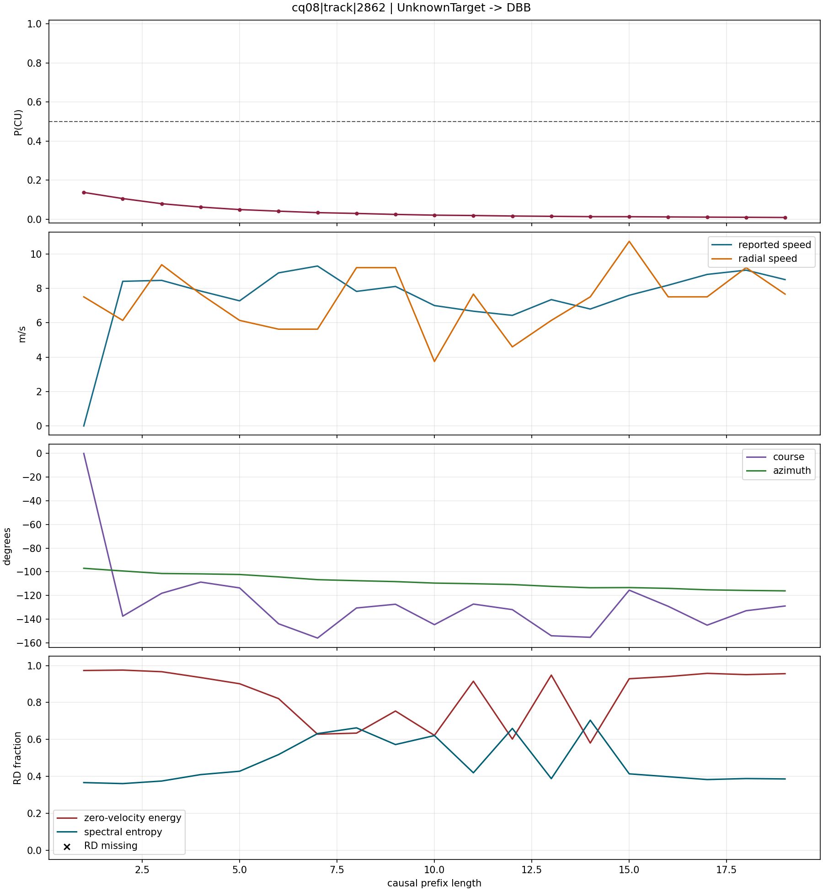
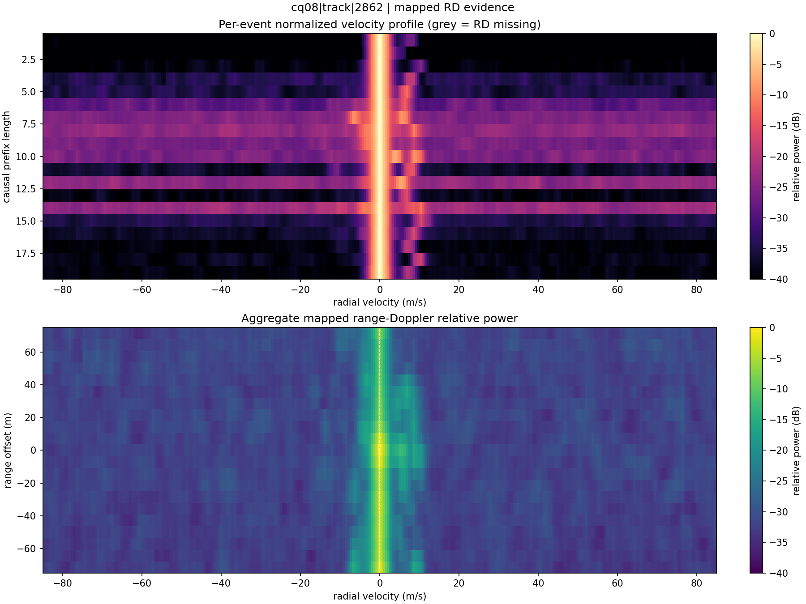
event CSV | parent JSON
Source files
{
"track_csv": "F:\\Project\\RadarInsight\\data\\processed\\cq08_tracks\\cq08__track__2862.csv",
"cq08_track_file": "F:\\Project\\RadarInsight\\OriData\\23\\CQ-08\\航迹\\Tracks_2862_6_19.txt",
"cq08_point_file": "F:\\Project\\RadarInsight\\OriData\\23\\CQ-08\\点迹\\PointTracks_2862_6_19.txt",
"cq08_raw_echo_file": "F:\\Project\\RadarInsight\\OriData\\23\\CQ-08\\原始回波\\2862_Label_6.dat",
"rd_tensor": "F:\\Project\\RadarInsight\\data\\processed\\cq08_rd_physical_canonical_v3_1\\cq08__track__2862_rd_tensor.npz",
"rd_mat_files": [
"F:\\Project\\RadarInsight\\OriData\\23\\CQ-08\\MAT\\20250616085730_DAUR_RD_Other_0001_2862.mat",
"F:\\Project\\RadarInsight\\OriData\\23\\CQ-08\\MAT\\20250616085730_DAUR_RD_Other_0002_2862.mat",
"F:\\Project\\RadarInsight\\OriData\\23\\CQ-08\\MAT\\20250616085730_DAUR_RD_Other_0003_2862.mat",
"F:\\Project\\RadarInsight\\OriData\\23\\CQ-08\\MAT\\20250616085730_DAUR_RD_Other_0004_2862.mat",
"F:\\Project\\RadarInsight\\OriData\\23\\CQ-08\\MAT\\20250616085730_DAUR_RD_Other_0005_2862.mat",
"F:\\Project\\RadarInsight\\OriData\\23\\CQ-08\\MAT\\20250616085730_DAUR_RD_Other_0006_2862.mat",
"F:\\Project\\RadarInsight\\OriData\\23\\CQ-08\\MAT\\20250616085730_DAUR_RD_Other_0007_2862.mat",
"F:\\Project\\RadarInsight\\OriData\\23\\CQ-08\\MAT\\20250616085730_DAUR_RD_Other_0008_2862.mat",
"F:\\Project\\RadarInsight\\OriData\\23\\CQ-08\\MAT\\20250616085730_DAUR_RD_Other_0009_2862.mat",
"F:\\Project\\RadarInsight\\OriData\\23\\CQ-08\\MAT\\20250616085730_DAUR_RD_Other_0010_2862.mat",
"F:\\Project\\RadarInsight\\OriData\\23\\CQ-08\\MAT\\20250616085730_DAUR_RD_Other_0011_2862.mat",
"F:\\Project\\RadarInsight\\OriData\\23\\CQ-08\\MAT\\20250616085730_DAUR_RD_Other_0012_2862.mat",
"F:\\Project\\RadarInsight\\OriData\\23\\CQ-08\\MAT\\20250616085730_DAUR_RD_Other_0013_2862.mat",
"F:\\Project\\RadarInsight\\OriData\\23\\CQ-08\\MAT\\20250616085730_DAUR_RD_Other_0014_2862.mat",
"F:\\Project\\RadarInsight\\OriData\\23\\CQ-08\\MAT\\20250616085730_DAUR_RD_Other_0015_2862.mat",
"F:\\Project\\RadarInsight\\OriData\\23\\CQ-08\\MAT\\20250616085730_DAUR_RD_Other_0016_2862.mat",
"F:\\Project\\RadarInsight\\OriData\\23\\CQ-08\\MAT\\20250616085730_DAUR_RD_Other_0017_2862.mat",
"F:\\Project\\RadarInsight\\OriData\\23\\CQ-08\\MAT\\20250616085730_DAUR_RD_Other_0018_2862.mat",
"F:\\Project\\RadarInsight\\OriData\\23\\CQ-08\\MAT\\20250616085730_DAUR_RD_Other_0019_2862.mat",
"F:\\Project\\RadarInsight\\OriData\\23\\CQ-08\\MAT\\20250616085730_DAUR_RD_Other_0020_2862.mat",
"F:\\Project\\RadarInsight\\OriData\\23\\CQ-08\\MAT\\20250616085730_DAUR_RD_Other_0021_2862.mat",
"F:\\Project\\RadarInsight\\OriData\\23\\CQ-08\\MAT\\20250616085730_DAUR_RD_Other_0022_2862.mat",
"F:\\Project\\RadarInsight\\OriData\\23\\CQ-08\\MAT\\20250616085730_DAUR_RD_Other_0023_2862.mat",
"F:\\Project\\RadarInsight\\OriData\\23\\CQ-08\\MAT\\20250616085730_DAUR_RD_Other_0024_2862.mat",
"F:\\Project\\RadarInsight\\OriData\\23\\CQ-08\\MAT\\20250616085730_DAUR_RD_Other_0025_2862.mat",
"F:\\Project\\RadarInsight\\OriData\\23\\CQ-08\\MAT\\20250616085730_DAUR_RD_Other_0026_2862.mat",
"F:\\Project\\RadarInsight\\OriData\\23\\CQ-08\\MAT\\20250616085730_DAUR_RD_Other_0027_2862.mat",
"F:\\Project\\RadarInsight\\OriData\\23\\CQ-08\\MAT\\20250616085730_DAUR_RD_Other_0028_2862.mat",
"F:\\Project\\RadarInsight\\OriData\\23\\CQ-08\\MAT\\20250616085730_DAUR_RD_Other_0029_2862.mat",
"F:\\Project\\RadarInsight\\OriData\\23\\CQ-08\\MAT\\20250616085730_DAUR_RD_Other_0030_2862.mat",
"F:\\Project\\RadarInsight\\OriData\\23\\CQ-08\\MAT\\20250616085730_DAUR_RD_Other_0031_2862.mat",
"F:\\Project\\RadarInsight\\OriData\\23\\CQ-08\\MAT\\20250616085730_DAUR_RD_Other_0032_2862.mat",
"F:\\Project\\RadarInsight\\OriData\\23\\CQ-08\\MAT\\20250616085730_DAUR_RD_Other_0033_2862.mat",
"F:\\Project\\RadarInsight\\OriData\\23\\CQ-08\\MAT\\20250616085730_DAUR_RD_Other_0034_2862.mat",
"F:\\Project\\RadarInsight\\OriData\\23\\CQ-08\\MAT\\20250616085730_DAUR_RD_Other_0035_2862.mat",
"F:\\Project\\RadarInsight\\OriData\\23\\CQ-08\\MAT\\20250616085730_DAUR_RD_Other_0036_2862.mat",
"F:\\Project\\RadarInsight\\OriData\\23\\CQ-08\\MAT\\20250616085730_DAUR_RD_Other_0037_2862.mat",
"F:\\Project\\RadarInsight\\OriData\\23\\CQ-08\\MAT\\20250616085730_DAUR_RD_Other_0038_2862.mat",
"F:\\Project\\RadarInsight\\OriData\\23\\CQ-08\\MAT\\20250616085730_DAUR_RD_Other_0039_2862.mat",
"F:\\Project\\RadarInsight\\OriData\\23\\CQ-08\\MAT\\20250616085730_DAUR_RD_Other_0040_2862.mat",
"F:\\Project\\RadarInsight\\OriData\\23\\CQ-08\\MAT\\20250616085730_DAUR_RD_Other_0041_2862.mat",
"F:\\Project\\RadarInsight\\OriData\\23\\CQ-08\\MAT\\20250616085730_DAUR_RD_Other_0042_2862.mat",
"F:\\Project\\RadarInsight\\OriData\\23\\CQ-08\\MAT\\20250616085730_DAUR_RD_Other_0043_2862.mat",
"F:\\Project\\RadarInsight\\OriData\\23\\CQ-08\\MAT\\20250616085730_DAUR_RD_Other_0044_2862.mat",
"F:\\Project\\RadarInsight\\OriData\\23\\CQ-08\\MAT\\20250616085730_DAUR_RD_Other_0045_2862.mat",
"F:\\Project\\RadarInsight\\OriData\\23\\CQ-08\\MAT\\20250616085730_DAUR_RD_Other_0046_2862.mat",
"F:\\Project\\RadarInsight\\OriData\\23\\CQ-08\\MAT\\20250616085730_DAUR_RD_Other_0047_2862.mat",
"F:\\Project\\RadarInsight\\OriData\\23\\CQ-08\\MAT\\20250616085730_DAUR_RD_Other_0048_2862.mat",
"F:\\Project\\RadarInsight\\OriData\\23\\CQ-08\\MAT\\20250616085730_DAUR_RD_Other_0049_2862.mat",
"F:\\Project\\RadarInsight\\OriData\\23\\CQ-08\\MAT\\20250616085730_DAUR_RD_Other_0050_2862.mat",
"F:\\Project\\RadarInsight\\OriData\\23\\CQ-08\\MAT\\20250616085730_DAUR_RD_Other_0051_2862.mat",
"F:\\Project\\RadarInsight\\OriData\\23\\CQ-08\\MAT\\20250616085730_DAUR_RD_Other_0052_2862.mat",
"F:\\Project\\RadarInsight\\OriData\\23\\CQ-08\\MAT\\20250616085730_DAUR_RD_Other_0053_2862.mat",
"F:\\Project\\RadarInsight\\OriData\\23\\CQ-08\\MAT\\20250616085730_DAUR_RD_Other_0054_2862.mat",
"F:\\Project\\RadarInsight\\OriData\\23\\CQ-08\\MAT\\20250616085730_DAUR_RD_Other_0055_2862.mat",
"F:\\Project\\RadarInsight\\OriData\\23\\CQ-08\\MAT\\20250616085730_DAUR_RD_Other_0056_2862.mat",
"F:\\Project\\RadarInsight\\OriData\\23\\CQ-08\\MAT\\20250616085730_DAUR_RD_Other_0057_2862.mat",
"F:\\Project\\RadarInsight\\OriData\\23\\CQ-08\\MAT\\20250616085730_DAUR_RD_Other_0058_2862.mat",
"F:\\Project\\RadarInsight\\OriData\\23\\CQ-08\\MAT\\20250616085730_DAUR_RD_Other_0059_2862.mat",
"F:\\Project\\RadarInsight\\OriData\\23\\CQ-08\\MAT\\20250616085730_DAUR_RD_Other_0060_2862.mat",
"F:\\Project\\RadarInsight\\OriData\\23\\CQ-08\\MAT\\20250616085730_DAUR_RD_Other_0061_2862.mat",
"F:\\Project\\RadarInsight\\OriData\\23\\CQ-08\\MAT\\20250616085730_DAUR_RD_Other_0062_2862.mat",
"F:\\Project\\RadarInsight\\OriData\\23\\CQ-08\\MAT\\20250616085730_DAUR_RD_Other_0063_2862.mat",
"F:\\Project\\RadarInsight\\OriData\\23\\CQ-08\\MAT\\20250616085730_DAUR_RD_Other_0064_2862.mat",
"F:\\Project\\RadarInsight\\OriData\\23\\CQ-08\\MAT\\20250616085730_DAUR_RD_Other_0065_2862.mat",
"F:\\Project\\RadarInsight\\OriData\\23\\CQ-08\\MAT\\20250616085730_DAUR_RD_Other_0066_2862.mat",
"F:\\Project\\RadarInsight\\OriData\\23\\CQ-08\\MAT\\20250616085730_DAUR_RD_Other_0067_2862.mat",
"F:\\Project\\RadarInsight\\OriData\\23\\CQ-08\\MAT\\20250616085730_DAUR_RD_Other_0068_2862.mat",
"F:\\Project\\RadarInsight\\OriData\\23\\CQ-08\\MAT\\20250616085730_DAUR_RD_Other_0069_2862.mat",
"F:\\Project\\RadarInsight\\OriData\\23\\CQ-08\\MAT\\20250616085730_DAUR_RD_Other_0070_2862.mat",
"F:\\Project\\RadarInsight\\OriData\\23\\CQ-08\\MAT\\20250616085730_DAUR_RD_Other_0071_2862.mat",
"F:\\Project\\RadarInsight\\OriData\\23\\CQ-08\\MAT\\20250616085730_DAUR_RD_Other_0072_2862.mat",
"F:\\Project\\RadarInsight\\OriData\\23\\CQ-08\\MAT\\20250616085730_DAUR_RD_Other_0073_2862.mat",
"F:\\Project\\RadarInsight\\OriData\\23\\CQ-08\\MAT\\20250616085730_DAUR_RD_Other_0074_2862.mat",
"F:\\Project\\RadarInsight\\OriData\\23\\CQ-08\\MAT\\20250616085730_DAUR_RD_Other_0075_2862.mat",
"F:\\Project\\RadarInsight\\OriData\\23\\CQ-08\\MAT\\20250616085730_DAUR_RD_Other_0076_2862.mat",
"F:\\Project\\RadarInsight\\OriData\\23\\CQ-08\\MAT\\20250616085730_DAUR_RD_Other_0077_2862.mat",
"F:\\Project\\RadarInsight\\OriData\\23\\CQ-08\\MAT\\20250616085730_DAUR_RD_Other_0078_2862.mat",
"F:\\Project\\RadarInsight\\OriData\\23\\CQ-08\\MAT\\20250616085730_DAUR_RD_Other_0079_2862.mat",
"F:\\Project\\RadarInsight\\OriData\\23\\CQ-08\\MAT\\20250616085730_DAUR_RD_Other_0080_2862.mat",
"F:\\Project\\RadarInsight\\OriData\\23\\CQ-08\\MAT\\20250616085730_DAUR_RD_Other_0081_2862.mat",
"F:\\Project\\RadarInsight\\OriData\\23\\CQ-08\\MAT\\20250616085730_DAUR_RD_Other_0082_2862.mat",
"F:\\Project\\RadarInsight\\OriData\\23\\CQ-08\\MAT\\20250616085730_DAUR_RD_Other_0083_2862.mat",
"F:\\Project\\RadarInsight\\OriData\\23\\CQ-08\\MAT\\20250616085730_DAUR_RD_Other_0084_2862.mat"
]
}cq08|track|2908
Current label: UnknownTarget V10 final route: DBB confidence: 0.8084
Events: 21 RD: 21/21 (full)
Automatic attention flags: P, R, E, F, I, X, _, R, O, U, T, E, _, C, H, A, N, G, E, D, ;, U, N, K, N, O, W, N, _, C, L, O, S, E, D, _, S, E, T, _, N, O, T, _, R, E, J, E, C, T
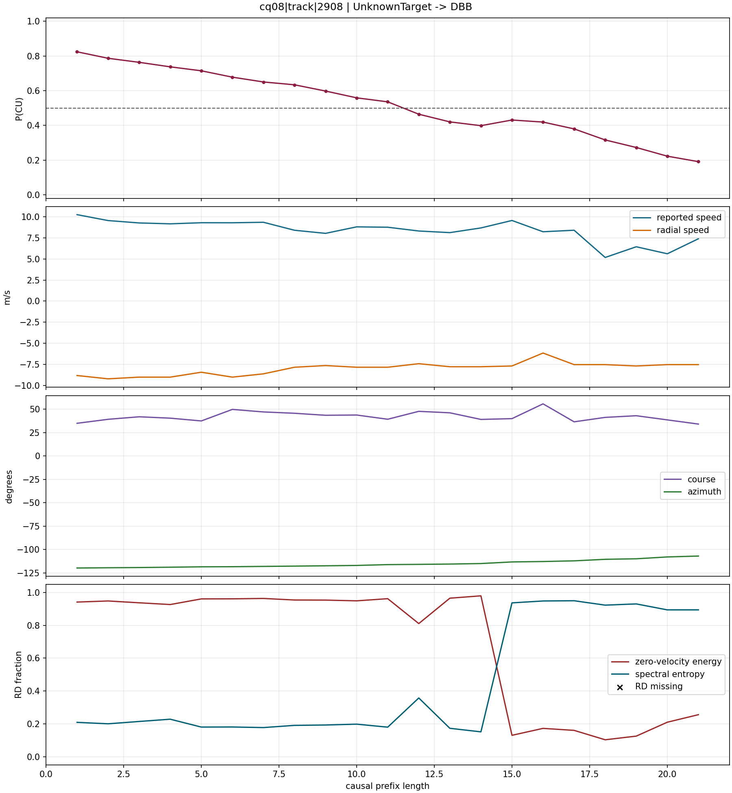
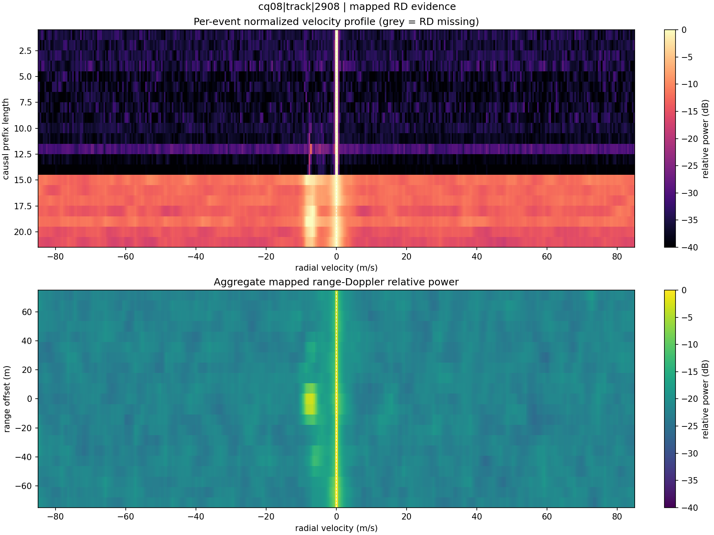
event CSV | parent JSON
Source files
{
"track_csv": "F:\\Project\\RadarInsight\\data\\processed\\cq08_tracks\\cq08__track__2908.csv",
"cq08_track_file": "F:\\Project\\RadarInsight\\OriData\\23\\CQ-08\\航迹\\Tracks_2908_6_21.txt",
"cq08_point_file": "F:\\Project\\RadarInsight\\OriData\\23\\CQ-08\\点迹\\PointTracks_2908_6_21.txt",
"cq08_raw_echo_file": "F:\\Project\\RadarInsight\\OriData\\23\\CQ-08\\原始回波\\2908_Label_6.dat",
"rd_tensor": "F:\\Project\\RadarInsight\\data\\processed\\cq08_rd_physical_canonical_v3_1\\cq08__track__2908_rd_tensor.npz",
"rd_mat_files": [
"F:\\Project\\RadarInsight\\OriData\\23\\CQ-08\\MAT\\20250616090622_DAUR_RD_Other_0001_2908.mat",
"F:\\Project\\RadarInsight\\OriData\\23\\CQ-08\\MAT\\20250616090622_DAUR_RD_Other_0002_2908.mat",
"F:\\Project\\RadarInsight\\OriData\\23\\CQ-08\\MAT\\20250616090622_DAUR_RD_Other_0003_2908.mat",
"F:\\Project\\RadarInsight\\OriData\\23\\CQ-08\\MAT\\20250616090622_DAUR_RD_Other_0004_2908.mat",
"F:\\Project\\RadarInsight\\OriData\\23\\CQ-08\\MAT\\20250616090622_DAUR_RD_Other_0005_2908.mat",
"F:\\Project\\RadarInsight\\OriData\\23\\CQ-08\\MAT\\20250616090622_DAUR_RD_Other_0006_2908.mat",
"F:\\Project\\RadarInsight\\OriData\\23\\CQ-08\\MAT\\20250616090622_DAUR_RD_Other_0007_2908.mat",
"F:\\Project\\RadarInsight\\OriData\\23\\CQ-08\\MAT\\20250616090622_DAUR_RD_Other_0008_2908.mat",
"F:\\Project\\RadarInsight\\OriData\\23\\CQ-08\\MAT\\20250616090622_DAUR_RD_Other_0009_2908.mat",
"F:\\Project\\RadarInsight\\OriData\\23\\CQ-08\\MAT\\20250616090622_DAUR_RD_Other_0010_2908.mat",
"F:\\Project\\RadarInsight\\OriData\\23\\CQ-08\\MAT\\20250616090622_DAUR_RD_Other_0011_2908.mat",
"F:\\Project\\RadarInsight\\OriData\\23\\CQ-08\\MAT\\20250616090622_DAUR_RD_Other_0012_2908.mat",
"F:\\Project\\RadarInsight\\OriData\\23\\CQ-08\\MAT\\20250616090622_DAUR_RD_Other_0013_2908.mat",
"F:\\Project\\RadarInsight\\OriData\\23\\CQ-08\\MAT\\20250616090622_DAUR_RD_Other_0014_2908.mat",
"F:\\Project\\RadarInsight\\OriData\\23\\CQ-08\\MAT\\20250616090622_DAUR_RD_Other_0015_2908.mat",
"F:\\Project\\RadarInsight\\OriData\\23\\CQ-08\\MAT\\20250616090622_DAUR_RD_Other_0016_2908.mat",
"F:\\Project\\RadarInsight\\OriData\\23\\CQ-08\\MAT\\20250616090622_DAUR_RD_Other_0017_2908.mat",
"F:\\Project\\RadarInsight\\OriData\\23\\CQ-08\\MAT\\20250616090622_DAUR_RD_Other_0018_2908.mat",
"F:\\Project\\RadarInsight\\OriData\\23\\CQ-08\\MAT\\20250616090622_DAUR_RD_Other_0019_2908.mat",
"F:\\Project\\RadarInsight\\OriData\\23\\CQ-08\\MAT\\20250616090622_DAUR_RD_Other_0020_2908.mat",
"F:\\Project\\RadarInsight\\OriData\\23\\CQ-08\\MAT\\20250616090622_DAUR_RD_Other_0021_2908.mat",
"F:\\Project\\RadarInsight\\OriData\\23\\CQ-08\\MAT\\20250616090622_DAUR_RD_Other_0022_2908.mat",
"F:\\Project\\RadarInsight\\OriData\\23\\CQ-08\\MAT\\20250616090622_DAUR_RD_Other_0023_2908.mat",
"F:\\Project\\RadarInsight\\OriData\\23\\CQ-08\\MAT\\20250616090622_DAUR_RD_Other_0024_2908.mat",
"F:\\Project\\RadarInsight\\OriData\\23\\CQ-08\\MAT\\20250616090622_DAUR_RD_Other_0025_2908.mat",
"F:\\Project\\RadarInsight\\OriData\\23\\CQ-08\\MAT\\20250616090622_DAUR_RD_Other_0026_2908.mat",
"F:\\Project\\RadarInsight\\OriData\\23\\CQ-08\\MAT\\20250616090622_DAUR_RD_Other_0027_2908.mat",
"F:\\Project\\RadarInsight\\OriData\\23\\CQ-08\\MAT\\20250616090622_DAUR_RD_Other_0028_2908.mat",
"F:\\Project\\RadarInsight\\OriData\\23\\CQ-08\\MAT\\20250616090622_DAUR_RD_Other_0029_2908.mat",
"F:\\Project\\RadarInsight\\OriData\\23\\CQ-08\\MAT\\20250616090622_DAUR_RD_Other_0030_2908.mat",
"F:\\Project\\RadarInsight\\OriData\\23\\CQ-08\\MAT\\20250616090622_DAUR_RD_Other_0031_2908.mat",
"F:\\Project\\RadarInsight\\OriData\\23\\CQ-08\\MAT\\20250616090622_DAUR_RD_Other_0032_2908.mat",
"F:\\Project\\RadarInsight\\OriData\\23\\CQ-08\\MAT\\20250616090622_DAUR_RD_Other_0033_2908.mat",
"F:\\Project\\RadarInsight\\OriData\\23\\CQ-08\\MAT\\20250616090622_DAUR_RD_Other_0034_2908.mat",
"F:\\Project\\RadarInsight\\OriData\\23\\CQ-08\\MAT\\20250616090622_DAUR_RD_Other_0035_2908.mat",
"F:\\Project\\RadarInsight\\OriData\\23\\CQ-08\\MAT\\20250616090622_DAUR_RD_Other_0036_2908.mat",
"F:\\Project\\RadarInsight\\OriData\\23\\CQ-08\\MAT\\20250616090622_DAUR_RD_Other_0037_2908.mat",
"F:\\Project\\RadarInsight\\OriData\\23\\CQ-08\\MAT\\20250616090622_DAUR_RD_Other_0038_2908.mat",
"F:\\Project\\RadarInsight\\OriData\\23\\CQ-08\\MAT\\20250616090622_DAUR_RD_Other_0039_2908.mat",
"F:\\Project\\RadarInsight\\OriData\\23\\CQ-08\\MAT\\20250616090622_DAUR_RD_Other_0040_2908.mat",
"F:\\Project\\RadarInsight\\OriData\\23\\CQ-08\\MAT\\20250616090622_DAUR_RD_Other_0041_2908.mat",
"F:\\Project\\RadarInsight\\OriData\\23\\CQ-08\\MAT\\20250616090622_DAUR_RD_Other_0042_2908.mat",
"F:\\Project\\RadarInsight\\OriData\\23\\CQ-08\\MAT\\20250616090622_DAUR_RD_Other_0043_2908.mat",
"F:\\Project\\RadarInsight\\OriData\\23\\CQ-08\\MAT\\20250616090622_DAUR_RD_Other_0044_2908.mat",
"F:\\Project\\RadarInsight\\OriData\\23\\CQ-08\\MAT\\20250616090622_DAUR_RD_Other_0045_2908.mat",
"F:\\Project\\RadarInsight\\OriData\\23\\CQ-08\\MAT\\20250616090622_DAUR_RD_Other_0046_2908.mat",
"F:\\Project\\RadarInsight\\OriData\\23\\CQ-08\\MAT\\20250616090622_DAUR_RD_Other_0047_2908.mat",
"F:\\Project\\RadarInsight\\OriData\\23\\CQ-08\\MAT\\20250616090622_DAUR_RD_Other_0048_2908.mat",
"F:\\Project\\RadarInsight\\OriData\\23\\CQ-08\\MAT\\20250616090622_DAUR_RD_Other_0049_2908.mat",
"F:\\Project\\RadarInsight\\OriData\\23\\CQ-08\\MAT\\20250616090622_DAUR_RD_Other_0050_2908.mat",
"F:\\Project\\RadarInsight\\OriData\\23\\CQ-08\\MAT\\20250616090622_DAUR_RD_Other_0051_2908.mat",
"F:\\Project\\RadarInsight\\OriData\\23\\CQ-08\\MAT\\20250616090622_DAUR_RD_Other_0052_2908.mat",
"F:\\Project\\RadarInsight\\OriData\\23\\CQ-08\\MAT\\20250616090622_DAUR_RD_Other_0053_2908.mat",
"F:\\Project\\RadarInsight\\OriData\\23\\CQ-08\\MAT\\20250616090622_DAUR_RD_Other_0054_2908.mat",
"F:\\Project\\RadarInsight\\OriData\\23\\CQ-08\\MAT\\20250616090622_DAUR_RD_Other_0055_2908.mat",
"F:\\Project\\RadarInsight\\OriData\\23\\CQ-08\\MAT\\20250616090622_DAUR_RD_Other_0056_2908.mat",
"F:\\Project\\RadarInsight\\OriData\\23\\CQ-08\\MAT\\20250616090622_DAUR_RD_Other_0057_2908.mat",
"F:\\Project\\RadarInsight\\OriData\\23\\CQ-08\\MAT\\20250616090622_DAUR_RD_Other_0058_2908.mat",
"F:\\Project\\RadarInsight\\OriData\\23\\CQ-08\\MAT\\20250616090622_DAUR_RD_Other_0059_2908.mat",
"F:\\Project\\RadarInsight\\OriData\\23\\CQ-08\\MAT\\20250616090622_DAUR_RD_Other_0060_2908.mat",
"F:\\Project\\RadarInsight\\OriData\\23\\CQ-08\\MAT\\20250616090622_DAUR_RD_Other_0061_2908.mat",
"F:\\Project\\RadarInsight\\OriData\\23\\CQ-08\\MAT\\20250616090622_DAUR_RD_Other_0062_2908.mat"
]
}cq08|track|2956
Current label: BirdTarget V10 final route: CU confidence: 0.9082
Events: 22 RD: 22/22 (full)
Automatic attention flags: H, I, G, H, _, C, O, N, F, I, D, E, N, C, E, _, E, R, R, O, R, ;, R, O, U, T, E, _, C, O, N, S, T, A, N, T, _, F, R, O, M, _, F, I, R, S, T, _, P, R, E, F, I, X
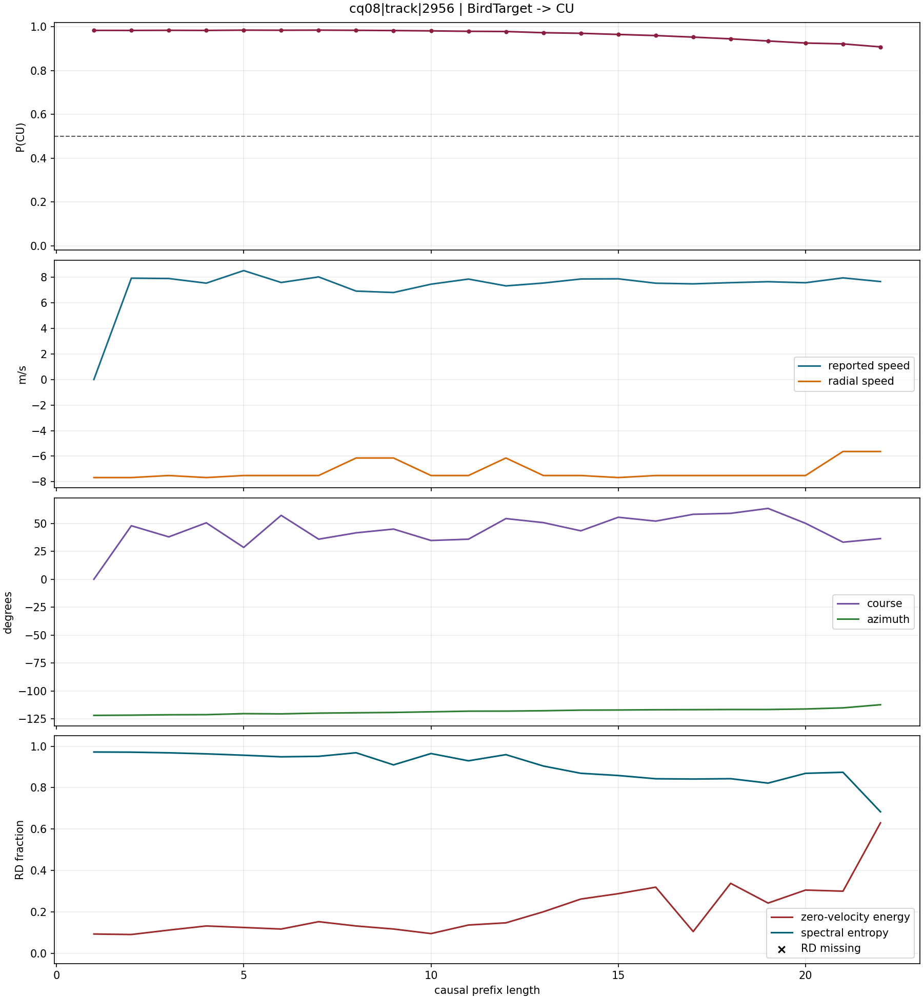
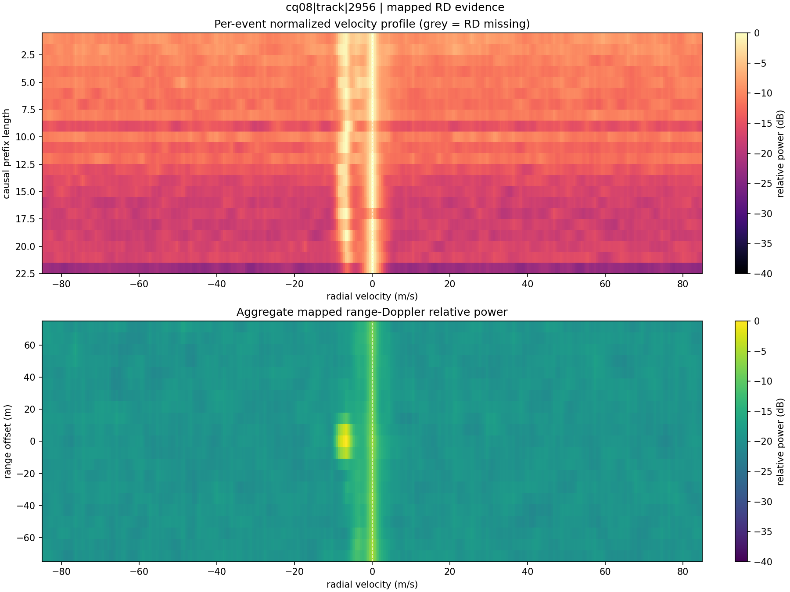
event CSV | parent JSON
Source files
{
"track_csv": "F:\\Project\\RadarInsight\\data\\processed\\cq08_tracks\\cq08__track__2956.csv",
"cq08_track_file": "F:\\Project\\RadarInsight\\OriData\\23\\CQ-08\\航迹\\Tracks_2956_3_22.txt",
"cq08_point_file": "F:\\Project\\RadarInsight\\OriData\\23\\CQ-08\\点迹\\PointTracks_2956_3_22.txt",
"cq08_raw_echo_file": "F:\\Project\\RadarInsight\\OriData\\23\\CQ-08\\原始回波\\2956_Label_3.dat",
"rd_tensor": "F:\\Project\\RadarInsight\\data\\processed\\cq08_rd_physical_canonical_v3_1\\cq08__track__2956_rd_tensor.npz",
"rd_mat_files": [
"F:\\Project\\RadarInsight\\OriData\\23\\CQ-08\\MAT\\20250616094412_DAUR_RD_Bird_0001_2956.mat",
"F:\\Project\\RadarInsight\\OriData\\23\\CQ-08\\MAT\\20250616094412_DAUR_RD_Bird_0002_2956.mat",
"F:\\Project\\RadarInsight\\OriData\\23\\CQ-08\\MAT\\20250616094412_DAUR_RD_Bird_0003_2956.mat",
"F:\\Project\\RadarInsight\\OriData\\23\\CQ-08\\MAT\\20250616094412_DAUR_RD_Bird_0004_2956.mat",
"F:\\Project\\RadarInsight\\OriData\\23\\CQ-08\\MAT\\20250616094412_DAUR_RD_Bird_0005_2956.mat",
"F:\\Project\\RadarInsight\\OriData\\23\\CQ-08\\MAT\\20250616094412_DAUR_RD_Bird_0006_2956.mat",
"F:\\Project\\RadarInsight\\OriData\\23\\CQ-08\\MAT\\20250616094412_DAUR_RD_Bird_0007_2956.mat",
"F:\\Project\\RadarInsight\\OriData\\23\\CQ-08\\MAT\\20250616094412_DAUR_RD_Bird_0008_2956.mat",
"F:\\Project\\RadarInsight\\OriData\\23\\CQ-08\\MAT\\20250616094412_DAUR_RD_Bird_0009_2956.mat",
"F:\\Project\\RadarInsight\\OriData\\23\\CQ-08\\MAT\\20250616094412_DAUR_RD_Bird_0010_2956.mat",
"F:\\Project\\RadarInsight\\OriData\\23\\CQ-08\\MAT\\20250616094412_DAUR_RD_Bird_0011_2956.mat",
"F:\\Project\\RadarInsight\\OriData\\23\\CQ-08\\MAT\\20250616094412_DAUR_RD_Bird_0012_2956.mat",
"F:\\Project\\RadarInsight\\OriData\\23\\CQ-08\\MAT\\20250616094412_DAUR_RD_Bird_0013_2956.mat",
"F:\\Project\\RadarInsight\\OriData\\23\\CQ-08\\MAT\\20250616094412_DAUR_RD_Bird_0014_2956.mat",
"F:\\Project\\RadarInsight\\OriData\\23\\CQ-08\\MAT\\20250616094412_DAUR_RD_Bird_0015_2956.mat",
"F:\\Project\\RadarInsight\\OriData\\23\\CQ-08\\MAT\\20250616094412_DAUR_RD_Bird_0016_2956.mat",
"F:\\Project\\RadarInsight\\OriData\\23\\CQ-08\\MAT\\20250616094412_DAUR_RD_Bird_0017_2956.mat",
"F:\\Project\\RadarInsight\\OriData\\23\\CQ-08\\MAT\\20250616094412_DAUR_RD_Bird_0018_2956.mat",
"F:\\Project\\RadarInsight\\OriData\\23\\CQ-08\\MAT\\20250616094412_DAUR_RD_Bird_0019_2956.mat",
"F:\\Project\\RadarInsight\\OriData\\23\\CQ-08\\MAT\\20250616094412_DAUR_RD_Bird_0020_2956.mat",
"F:\\Project\\RadarInsight\\OriData\\23\\CQ-08\\MAT\\20250616094412_DAUR_RD_Bird_0021_2956.mat",
"F:\\Project\\RadarInsight\\OriData\\23\\CQ-08\\MAT\\20250616094412_DAUR_RD_Bird_0022_2956.mat",
"F:\\Project\\RadarInsight\\OriData\\23\\CQ-08\\MAT\\20250616094412_DAUR_RD_Bird_0023_2956.mat",
"F:\\Project\\RadarInsight\\OriData\\23\\CQ-08\\MAT\\20250616094412_DAUR_RD_Bird_0024_2956.mat",
"F:\\Project\\RadarInsight\\OriData\\23\\CQ-08\\MAT\\20250616094412_DAUR_RD_Bird_0025_2956.mat",
"F:\\Project\\RadarInsight\\OriData\\23\\CQ-08\\MAT\\20250616094412_DAUR_RD_Bird_0026_2956.mat",
"F:\\Project\\RadarInsight\\OriData\\23\\CQ-08\\MAT\\20250616094412_DAUR_RD_Bird_0027_2956.mat",
"F:\\Project\\RadarInsight\\OriData\\23\\CQ-08\\MAT\\20250616094412_DAUR_RD_Bird_0028_2956.mat",
"F:\\Project\\RadarInsight\\OriData\\23\\CQ-08\\MAT\\20250616094412_DAUR_RD_Bird_0029_2956.mat",
"F:\\Project\\RadarInsight\\OriData\\23\\CQ-08\\MAT\\20250616094412_DAUR_RD_Bird_0030_2956.mat",
"F:\\Project\\RadarInsight\\OriData\\23\\CQ-08\\MAT\\20250616094412_DAUR_RD_Bird_0031_2956.mat",
"F:\\Project\\RadarInsight\\OriData\\23\\CQ-08\\MAT\\20250616094412_DAUR_RD_Bird_0032_2956.mat",
"F:\\Project\\RadarInsight\\OriData\\23\\CQ-08\\MAT\\20250616094412_DAUR_RD_Bird_0033_2956.mat",
"F:\\Project\\RadarInsight\\OriData\\23\\CQ-08\\MAT\\20250616094412_DAUR_RD_Bird_0034_2956.mat",
"F:\\Project\\RadarInsight\\OriData\\23\\CQ-08\\MAT\\20250616094412_DAUR_RD_Bird_0035_2956.mat",
"F:\\Project\\RadarInsight\\OriData\\23\\CQ-08\\MAT\\20250616094412_DAUR_RD_Bird_0036_2956.mat",
"F:\\Project\\RadarInsight\\OriData\\23\\CQ-08\\MAT\\20250616094412_DAUR_RD_Bird_0037_2956.mat",
"F:\\Project\\RadarInsight\\OriData\\23\\CQ-08\\MAT\\20250616094412_DAUR_RD_Bird_0038_2956.mat",
"F:\\Project\\RadarInsight\\OriData\\23\\CQ-08\\MAT\\20250616094412_DAUR_RD_Bird_0039_2956.mat",
"F:\\Project\\RadarInsight\\OriData\\23\\CQ-08\\MAT\\20250616094412_DAUR_RD_Bird_0040_2956.mat",
"F:\\Project\\RadarInsight\\OriData\\23\\CQ-08\\MAT\\20250616094412_DAUR_RD_Bird_0041_2956.mat",
"F:\\Project\\RadarInsight\\OriData\\23\\CQ-08\\MAT\\20250616094412_DAUR_RD_Bird_0042_2956.mat",
"F:\\Project\\RadarInsight\\OriData\\23\\CQ-08\\MAT\\20250616094412_DAUR_RD_Bird_0043_2956.mat",
"F:\\Project\\RadarInsight\\OriData\\23\\CQ-08\\MAT\\20250616094412_DAUR_RD_Bird_0044_2956.mat",
"F:\\Project\\RadarInsight\\OriData\\23\\CQ-08\\MAT\\20250616094412_DAUR_RD_Bird_0045_2956.mat",
"F:\\Project\\RadarInsight\\OriData\\23\\CQ-08\\MAT\\20250616094412_DAUR_RD_Bird_0046_2956.mat",
"F:\\Project\\RadarInsight\\OriData\\23\\CQ-08\\MAT\\20250616094412_DAUR_RD_Bird_0047_2956.mat",
"F:\\Project\\RadarInsight\\OriData\\23\\CQ-08\\MAT\\20250616094412_DAUR_RD_Bird_0048_2956.mat",
"F:\\Project\\RadarInsight\\OriData\\23\\CQ-08\\MAT\\20250616094412_DAUR_RD_Bird_0049_2956.mat",
"F:\\Project\\RadarInsight\\OriData\\23\\CQ-08\\MAT\\20250616094412_DAUR_RD_Bird_0050_2956.mat",
"F:\\Project\\RadarInsight\\OriData\\23\\CQ-08\\MAT\\20250616094412_DAUR_RD_Bird_0051_2956.mat",
"F:\\Project\\RadarInsight\\OriData\\23\\CQ-08\\MAT\\20250616094412_DAUR_RD_Bird_0052_2956.mat",
"F:\\Project\\RadarInsight\\OriData\\23\\CQ-08\\MAT\\20250616094412_DAUR_RD_Bird_0053_2956.mat",
"F:\\Project\\RadarInsight\\OriData\\23\\CQ-08\\MAT\\20250616094412_DAUR_RD_Bird_0054_2956.mat",
"F:\\Project\\RadarInsight\\OriData\\23\\CQ-08\\MAT\\20250616094412_DAUR_RD_Bird_0055_2956.mat",
"F:\\Project\\RadarInsight\\OriData\\23\\CQ-08\\MAT\\20250616094412_DAUR_RD_Bird_0056_2956.mat",
"F:\\Project\\RadarInsight\\OriData\\23\\CQ-08\\MAT\\20250616094412_DAUR_RD_Bird_0057_2956.mat",
"F:\\Project\\RadarInsight\\OriData\\23\\CQ-08\\MAT\\20250616094412_DAUR_RD_Bird_0058_2956.mat",
"F:\\Project\\RadarInsight\\OriData\\23\\CQ-08\\MAT\\20250616094412_DAUR_RD_Bird_0059_2956.mat",
"F:\\Project\\RadarInsight\\OriData\\23\\CQ-08\\MAT\\20250616094412_DAUR_RD_Bird_0060_2956.mat",
"F:\\Project\\RadarInsight\\OriData\\23\\CQ-08\\MAT\\20250616094412_DAUR_RD_Bird_0061_2956.mat",
"F:\\Project\\RadarInsight\\OriData\\23\\CQ-08\\MAT\\20250616094412_DAUR_RD_Bird_0062_2956.mat",
"F:\\Project\\RadarInsight\\OriData\\23\\CQ-08\\MAT\\20250616094412_DAUR_RD_Bird_0063_2956.mat",
"F:\\Project\\RadarInsight\\OriData\\23\\CQ-08\\MAT\\20250616094412_DAUR_RD_Bird_0064_2956.mat",
"F:\\Project\\RadarInsight\\OriData\\23\\CQ-08\\MAT\\20250616094412_DAUR_RD_Bird_0065_2956.mat",
"F:\\Project\\RadarInsight\\OriData\\23\\CQ-08\\MAT\\20250616094412_DAUR_RD_Bird_0066_2956.mat",
"F:\\Project\\RadarInsight\\OriData\\23\\CQ-08\\MAT\\20250616094412_DAUR_RD_Bird_0067_2956.mat",
"F:\\Project\\RadarInsight\\OriData\\23\\CQ-08\\MAT\\20250616094412_DAUR_RD_Bird_0068_2956.mat",
"F:\\Project\\RadarInsight\\OriData\\23\\CQ-08\\MAT\\20250616094412_DAUR_RD_Bird_0069_2956.mat",
"F:\\Project\\RadarInsight\\OriData\\23\\CQ-08\\MAT\\20250616094412_DAUR_RD_Bird_0070_2956.mat",
"F:\\Project\\RadarInsight\\OriData\\23\\CQ-08\\MAT\\20250616094412_DAUR_RD_Bird_0071_2956.mat",
"F:\\Project\\RadarInsight\\OriData\\23\\CQ-08\\MAT\\20250616094412_DAUR_RD_Bird_0072_2956.mat",
"F:\\Project\\RadarInsight\\OriData\\23\\CQ-08\\MAT\\20250616094412_DAUR_RD_Bird_0073_2956.mat",
"F:\\Project\\RadarInsight\\OriData\\23\\CQ-08\\MAT\\20250616094412_DAUR_RD_Bird_0074_2956.mat",
"F:\\Project\\RadarInsight\\OriData\\23\\CQ-08\\MAT\\20250616094412_DAUR_RD_Bird_0075_2956.mat",
"F:\\Project\\RadarInsight\\OriData\\23\\CQ-08\\MAT\\20250616094412_DAUR_RD_Bird_0076_2956.mat",
"F:\\Project\\RadarInsight\\OriData\\23\\CQ-08\\MAT\\20250616094412_DAUR_RD_Bird_0077_2956.mat",
"F:\\Project\\RadarInsight\\OriData\\23\\CQ-08\\MAT\\20250616094412_DAUR_RD_Bird_0078_2956.mat",
"F:\\Project\\RadarInsight\\OriData\\23\\CQ-08\\MAT\\20250616094412_DAUR_RD_Bird_0079_2956.mat",
"F:\\Project\\RadarInsight\\OriData\\23\\CQ-08\\MAT\\20250616094412_DAUR_RD_Bird_0080_2956.mat",
"F:\\Project\\RadarInsight\\OriData\\23\\CQ-08\\MAT\\20250616094412_DAUR_RD_Bird_0081_2956.mat",
"F:\\Project\\RadarInsight\\OriData\\23\\CQ-08\\MAT\\20250616094412_DAUR_RD_Bird_0082_2956.mat",
"F:\\Project\\RadarInsight\\OriData\\23\\CQ-08\\MAT\\20250616094412_DAUR_RD_Bird_0083_2956.mat",
"F:\\Project\\RadarInsight\\OriData\\23\\CQ-08\\MAT\\20250616094412_DAUR_RD_Bird_0084_2956.mat",
"F:\\Project\\RadarInsight\\OriData\\23\\CQ-08\\MAT\\20250616094412_DAUR_RD_Bird_0085_2956.mat",
"F:\\Project\\RadarInsight\\OriData\\23\\CQ-08\\MAT\\20250616094412_DAUR_RD_Bird_0086_2956.mat"
]
}cq08|track|3122
Current label: UnknownTarget V10 final route: DBB confidence: 0.8407
Events: 16 RD: 16/16 (full)
Automatic attention flags: P, R, E, F, I, X, _, R, O, U, T, E, _, C, H, A, N, G, E, D, ;, U, N, K, N, O, W, N, _, C, L, O, S, E, D, _, S, E, T, _, N, O, T, _, R, E, J, E, C, T
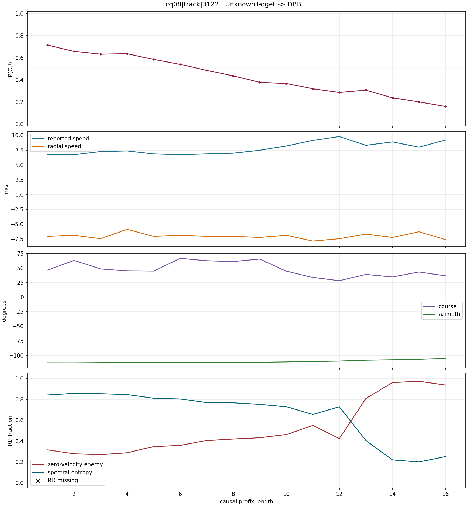
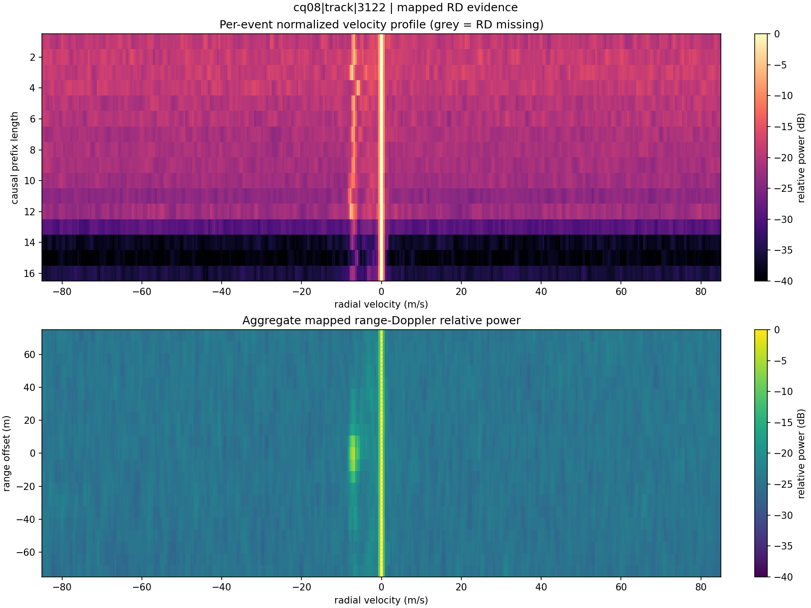
event CSV | parent JSON
Source files
{
"track_csv": "F:\\Project\\RadarInsight\\data\\processed\\cq08_tracks\\cq08__track__3122.csv",
"cq08_track_file": "F:\\Project\\RadarInsight\\OriData\\23\\CQ-08\\航迹\\Tracks_3122_6_16.txt",
"cq08_point_file": "F:\\Project\\RadarInsight\\OriData\\23\\CQ-08\\点迹\\PointTracks_3122_6_16.txt",
"cq08_raw_echo_file": "F:\\Project\\RadarInsight\\OriData\\23\\CQ-08\\原始回波\\3122_Label_6.dat",
"rd_tensor": "F:\\Project\\RadarInsight\\data\\processed\\cq08_rd_physical_canonical_v3_1\\cq08__track__3122_rd_tensor.npz",
"rd_mat_files": [
"F:\\Project\\RadarInsight\\OriData\\23\\CQ-08\\MAT\\20250616093121_DAUR_RD_Other_0001_3122.mat",
"F:\\Project\\RadarInsight\\OriData\\23\\CQ-08\\MAT\\20250616093121_DAUR_RD_Other_0002_3122.mat",
"F:\\Project\\RadarInsight\\OriData\\23\\CQ-08\\MAT\\20250616093121_DAUR_RD_Other_0003_3122.mat",
"F:\\Project\\RadarInsight\\OriData\\23\\CQ-08\\MAT\\20250616093121_DAUR_RD_Other_0004_3122.mat",
"F:\\Project\\RadarInsight\\OriData\\23\\CQ-08\\MAT\\20250616093121_DAUR_RD_Other_0005_3122.mat",
"F:\\Project\\RadarInsight\\OriData\\23\\CQ-08\\MAT\\20250616093121_DAUR_RD_Other_0006_3122.mat",
"F:\\Project\\RadarInsight\\OriData\\23\\CQ-08\\MAT\\20250616093121_DAUR_RD_Other_0007_3122.mat",
"F:\\Project\\RadarInsight\\OriData\\23\\CQ-08\\MAT\\20250616093121_DAUR_RD_Other_0008_3122.mat",
"F:\\Project\\RadarInsight\\OriData\\23\\CQ-08\\MAT\\20250616093121_DAUR_RD_Other_0009_3122.mat",
"F:\\Project\\RadarInsight\\OriData\\23\\CQ-08\\MAT\\20250616093121_DAUR_RD_Other_0010_3122.mat",
"F:\\Project\\RadarInsight\\OriData\\23\\CQ-08\\MAT\\20250616093121_DAUR_RD_Other_0011_3122.mat",
"F:\\Project\\RadarInsight\\OriData\\23\\CQ-08\\MAT\\20250616093121_DAUR_RD_Other_0012_3122.mat",
"F:\\Project\\RadarInsight\\OriData\\23\\CQ-08\\MAT\\20250616093121_DAUR_RD_Other_0013_3122.mat",
"F:\\Project\\RadarInsight\\OriData\\23\\CQ-08\\MAT\\20250616093121_DAUR_RD_Other_0014_3122.mat",
"F:\\Project\\RadarInsight\\OriData\\23\\CQ-08\\MAT\\20250616093121_DAUR_RD_Other_0015_3122.mat",
"F:\\Project\\RadarInsight\\OriData\\23\\CQ-08\\MAT\\20250616093121_DAUR_RD_Other_0016_3122.mat",
"F:\\Project\\RadarInsight\\OriData\\23\\CQ-08\\MAT\\20250616093121_DAUR_RD_Other_0017_3122.mat",
"F:\\Project\\RadarInsight\\OriData\\23\\CQ-08\\MAT\\20250616093121_DAUR_RD_Other_0018_3122.mat",
"F:\\Project\\RadarInsight\\OriData\\23\\CQ-08\\MAT\\20250616093121_DAUR_RD_Other_0019_3122.mat",
"F:\\Project\\RadarInsight\\OriData\\23\\CQ-08\\MAT\\20250616093121_DAUR_RD_Other_0020_3122.mat",
"F:\\Project\\RadarInsight\\OriData\\23\\CQ-08\\MAT\\20250616093121_DAUR_RD_Other_0021_3122.mat",
"F:\\Project\\RadarInsight\\OriData\\23\\CQ-08\\MAT\\20250616093121_DAUR_RD_Other_0022_3122.mat",
"F:\\Project\\RadarInsight\\OriData\\23\\CQ-08\\MAT\\20250616093121_DAUR_RD_Other_0023_3122.mat",
"F:\\Project\\RadarInsight\\OriData\\23\\CQ-08\\MAT\\20250616093121_DAUR_RD_Other_0024_3122.mat",
"F:\\Project\\RadarInsight\\OriData\\23\\CQ-08\\MAT\\20250616093121_DAUR_RD_Other_0025_3122.mat",
"F:\\Project\\RadarInsight\\OriData\\23\\CQ-08\\MAT\\20250616093121_DAUR_RD_Other_0026_3122.mat",
"F:\\Project\\RadarInsight\\OriData\\23\\CQ-08\\MAT\\20250616093121_DAUR_RD_Other_0027_3122.mat",
"F:\\Project\\RadarInsight\\OriData\\23\\CQ-08\\MAT\\20250616093121_DAUR_RD_Other_0028_3122.mat",
"F:\\Project\\RadarInsight\\OriData\\23\\CQ-08\\MAT\\20250616093121_DAUR_RD_Other_0029_3122.mat",
"F:\\Project\\RadarInsight\\OriData\\23\\CQ-08\\MAT\\20250616093121_DAUR_RD_Other_0030_3122.mat",
"F:\\Project\\RadarInsight\\OriData\\23\\CQ-08\\MAT\\20250616093121_DAUR_RD_Other_0031_3122.mat",
"F:\\Project\\RadarInsight\\OriData\\23\\CQ-08\\MAT\\20250616093121_DAUR_RD_Other_0032_3122.mat",
"F:\\Project\\RadarInsight\\OriData\\23\\CQ-08\\MAT\\20250616093121_DAUR_RD_Other_0033_3122.mat",
"F:\\Project\\RadarInsight\\OriData\\23\\CQ-08\\MAT\\20250616093121_DAUR_RD_Other_0034_3122.mat",
"F:\\Project\\RadarInsight\\OriData\\23\\CQ-08\\MAT\\20250616093121_DAUR_RD_Other_0035_3122.mat",
"F:\\Project\\RadarInsight\\OriData\\23\\CQ-08\\MAT\\20250616093121_DAUR_RD_Other_0036_3122.mat",
"F:\\Project\\RadarInsight\\OriData\\23\\CQ-08\\MAT\\20250616093121_DAUR_RD_Other_0037_3122.mat",
"F:\\Project\\RadarInsight\\OriData\\23\\CQ-08\\MAT\\20250616093121_DAUR_RD_Other_0038_3122.mat",
"F:\\Project\\RadarInsight\\OriData\\23\\CQ-08\\MAT\\20250616093121_DAUR_RD_Other_0039_3122.mat",
"F:\\Project\\RadarInsight\\OriData\\23\\CQ-08\\MAT\\20250616093121_DAUR_RD_Other_0040_3122.mat",
"F:\\Project\\RadarInsight\\OriData\\23\\CQ-08\\MAT\\20250616093121_DAUR_RD_Other_0041_3122.mat",
"F:\\Project\\RadarInsight\\OriData\\23\\CQ-08\\MAT\\20250616093121_DAUR_RD_Other_0042_3122.mat",
"F:\\Project\\RadarInsight\\OriData\\23\\CQ-08\\MAT\\20250616093121_DAUR_RD_Other_0043_3122.mat",
"F:\\Project\\RadarInsight\\OriData\\23\\CQ-08\\MAT\\20250616093121_DAUR_RD_Other_0044_3122.mat",
"F:\\Project\\RadarInsight\\OriData\\23\\CQ-08\\MAT\\20250616093121_DAUR_RD_Other_0045_3122.mat",
"F:\\Project\\RadarInsight\\OriData\\23\\CQ-08\\MAT\\20250616093121_DAUR_RD_Other_0046_3122.mat"
]
}cq08|track|3154
Current label: UnknownTarget V10 final route: DBB confidence: 0.6877
Events: 18 RD: 18/18 (full)
Automatic attention flags: P, R, E, F, I, X, _, R, O, U, T, E, _, C, H, A, N, G, E, D, ;, U, N, K, N, O, W, N, _, C, L, O, S, E, D, _, S, E, T, _, N, O, T, _, R, E, J, E, C, T
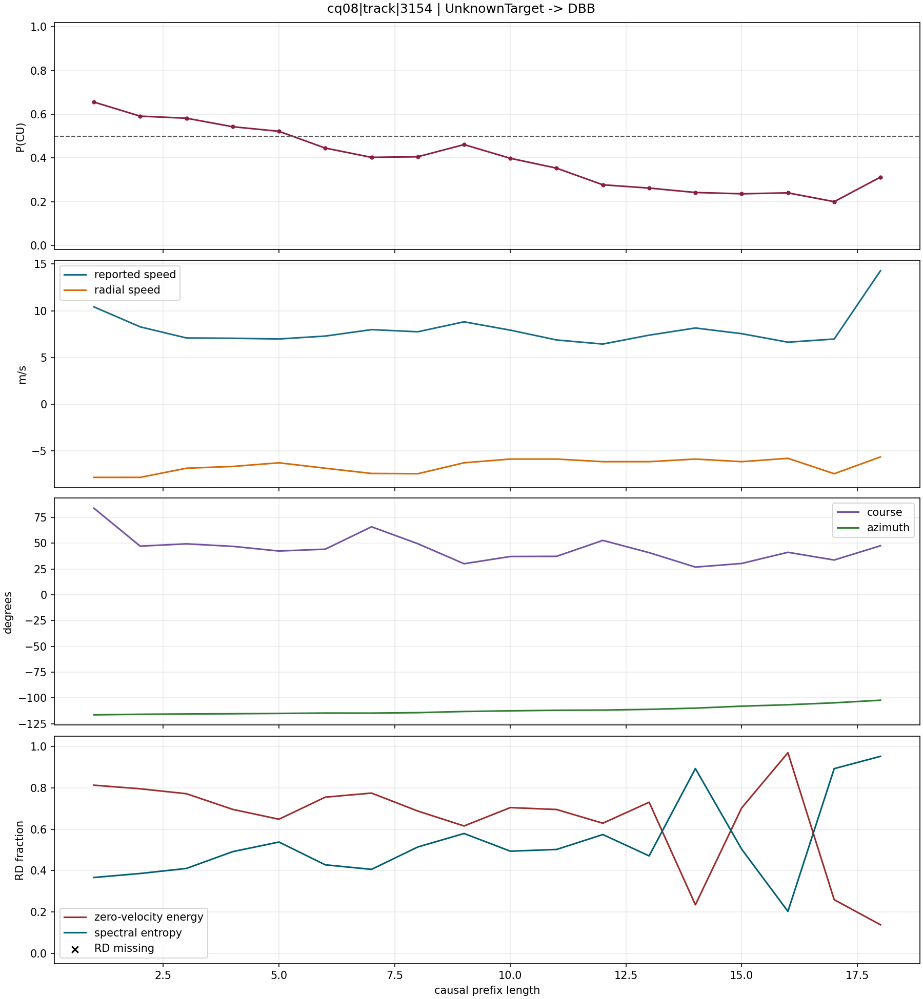
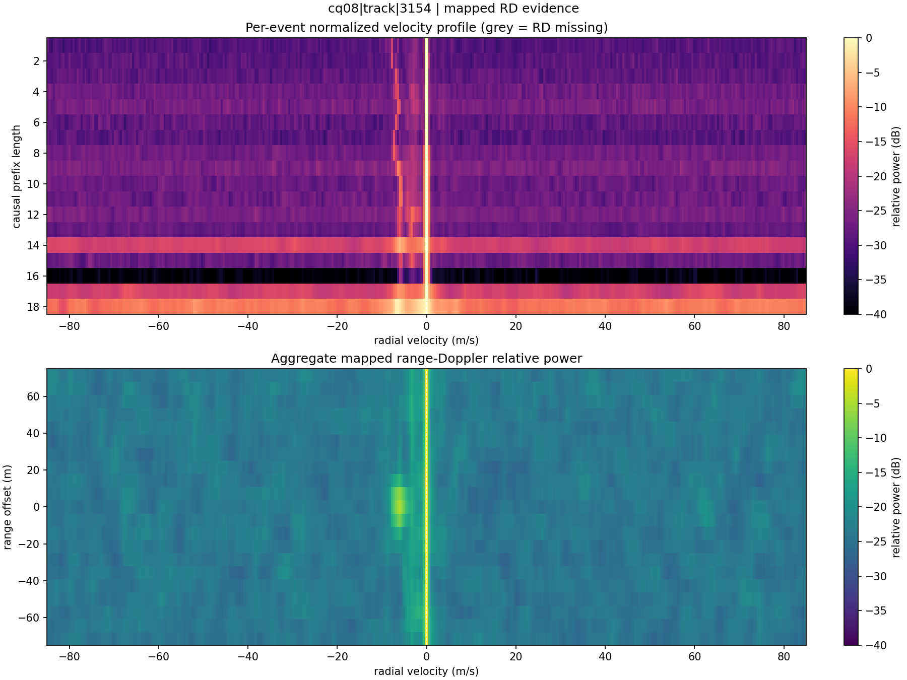
event CSV | parent JSON
Source files
{
"track_csv": "F:\\Project\\RadarInsight\\data\\processed\\cq08_tracks\\cq08__track__3154.csv",
"cq08_track_file": "F:\\Project\\RadarInsight\\OriData\\23\\CQ-08\\航迹\\Tracks_3154_6_18.txt",
"cq08_point_file": "F:\\Project\\RadarInsight\\OriData\\23\\CQ-08\\点迹\\PointTracks_3154_6_18.txt",
"cq08_raw_echo_file": "F:\\Project\\RadarInsight\\OriData\\23\\CQ-08\\原始回波\\3154_Label_6.dat",
"rd_tensor": "F:\\Project\\RadarInsight\\data\\processed\\cq08_rd_physical_canonical_v3_1\\cq08__track__3154_rd_tensor.npz",
"rd_mat_files": [
"F:\\Project\\RadarInsight\\OriData\\23\\CQ-08\\MAT\\20250616093934_DAUR_RD_Other_0001_3154.mat",
"F:\\Project\\RadarInsight\\OriData\\23\\CQ-08\\MAT\\20250616093934_DAUR_RD_Other_0002_3154.mat",
"F:\\Project\\RadarInsight\\OriData\\23\\CQ-08\\MAT\\20250616093934_DAUR_RD_Other_0003_3154.mat",
"F:\\Project\\RadarInsight\\OriData\\23\\CQ-08\\MAT\\20250616093934_DAUR_RD_Other_0004_3154.mat",
"F:\\Project\\RadarInsight\\OriData\\23\\CQ-08\\MAT\\20250616093934_DAUR_RD_Other_0005_3154.mat",
"F:\\Project\\RadarInsight\\OriData\\23\\CQ-08\\MAT\\20250616093934_DAUR_RD_Other_0006_3154.mat",
"F:\\Project\\RadarInsight\\OriData\\23\\CQ-08\\MAT\\20250616093934_DAUR_RD_Other_0007_3154.mat",
"F:\\Project\\RadarInsight\\OriData\\23\\CQ-08\\MAT\\20250616093934_DAUR_RD_Other_0008_3154.mat",
"F:\\Project\\RadarInsight\\OriData\\23\\CQ-08\\MAT\\20250616093934_DAUR_RD_Other_0009_3154.mat",
"F:\\Project\\RadarInsight\\OriData\\23\\CQ-08\\MAT\\20250616093934_DAUR_RD_Other_0010_3154.mat",
"F:\\Project\\RadarInsight\\OriData\\23\\CQ-08\\MAT\\20250616093934_DAUR_RD_Other_0011_3154.mat",
"F:\\Project\\RadarInsight\\OriData\\23\\CQ-08\\MAT\\20250616093934_DAUR_RD_Other_0012_3154.mat",
"F:\\Project\\RadarInsight\\OriData\\23\\CQ-08\\MAT\\20250616093934_DAUR_RD_Other_0013_3154.mat",
"F:\\Project\\RadarInsight\\OriData\\23\\CQ-08\\MAT\\20250616093934_DAUR_RD_Other_0014_3154.mat",
"F:\\Project\\RadarInsight\\OriData\\23\\CQ-08\\MAT\\20250616093934_DAUR_RD_Other_0015_3154.mat",
"F:\\Project\\RadarInsight\\OriData\\23\\CQ-08\\MAT\\20250616093934_DAUR_RD_Other_0016_3154.mat",
"F:\\Project\\RadarInsight\\OriData\\23\\CQ-08\\MAT\\20250616093934_DAUR_RD_Other_0017_3154.mat",
"F:\\Project\\RadarInsight\\OriData\\23\\CQ-08\\MAT\\20250616093934_DAUR_RD_Other_0018_3154.mat",
"F:\\Project\\RadarInsight\\OriData\\23\\CQ-08\\MAT\\20250616093934_DAUR_RD_Other_0019_3154.mat",
"F:\\Project\\RadarInsight\\OriData\\23\\CQ-08\\MAT\\20250616093934_DAUR_RD_Other_0020_3154.mat",
"F:\\Project\\RadarInsight\\OriData\\23\\CQ-08\\MAT\\20250616093934_DAUR_RD_Other_0021_3154.mat",
"F:\\Project\\RadarInsight\\OriData\\23\\CQ-08\\MAT\\20250616093934_DAUR_RD_Other_0022_3154.mat",
"F:\\Project\\RadarInsight\\OriData\\23\\CQ-08\\MAT\\20250616093934_DAUR_RD_Other_0023_3154.mat",
"F:\\Project\\RadarInsight\\OriData\\23\\CQ-08\\MAT\\20250616093934_DAUR_RD_Other_0024_3154.mat",
"F:\\Project\\RadarInsight\\OriData\\23\\CQ-08\\MAT\\20250616093934_DAUR_RD_Other_0025_3154.mat",
"F:\\Project\\RadarInsight\\OriData\\23\\CQ-08\\MAT\\20250616093934_DAUR_RD_Other_0026_3154.mat",
"F:\\Project\\RadarInsight\\OriData\\23\\CQ-08\\MAT\\20250616093934_DAUR_RD_Other_0027_3154.mat",
"F:\\Project\\RadarInsight\\OriData\\23\\CQ-08\\MAT\\20250616093934_DAUR_RD_Other_0028_3154.mat",
"F:\\Project\\RadarInsight\\OriData\\23\\CQ-08\\MAT\\20250616093934_DAUR_RD_Other_0029_3154.mat",
"F:\\Project\\RadarInsight\\OriData\\23\\CQ-08\\MAT\\20250616093934_DAUR_RD_Other_0030_3154.mat",
"F:\\Project\\RadarInsight\\OriData\\23\\CQ-08\\MAT\\20250616093934_DAUR_RD_Other_0031_3154.mat",
"F:\\Project\\RadarInsight\\OriData\\23\\CQ-08\\MAT\\20250616093934_DAUR_RD_Other_0032_3154.mat",
"F:\\Project\\RadarInsight\\OriData\\23\\CQ-08\\MAT\\20250616093934_DAUR_RD_Other_0033_3154.mat",
"F:\\Project\\RadarInsight\\OriData\\23\\CQ-08\\MAT\\20250616093934_DAUR_RD_Other_0034_3154.mat",
"F:\\Project\\RadarInsight\\OriData\\23\\CQ-08\\MAT\\20250616093934_DAUR_RD_Other_0035_3154.mat",
"F:\\Project\\RadarInsight\\OriData\\23\\CQ-08\\MAT\\20250616093934_DAUR_RD_Other_0036_3154.mat",
"F:\\Project\\RadarInsight\\OriData\\23\\CQ-08\\MAT\\20250616093934_DAUR_RD_Other_0037_3154.mat",
"F:\\Project\\RadarInsight\\OriData\\23\\CQ-08\\MAT\\20250616093934_DAUR_RD_Other_0038_3154.mat",
"F:\\Project\\RadarInsight\\OriData\\23\\CQ-08\\MAT\\20250616093934_DAUR_RD_Other_0039_3154.mat",
"F:\\Project\\RadarInsight\\OriData\\23\\CQ-08\\MAT\\20250616093934_DAUR_RD_Other_0040_3154.mat",
"F:\\Project\\RadarInsight\\OriData\\23\\CQ-08\\MAT\\20250616093934_DAUR_RD_Other_0041_3154.mat",
"F:\\Project\\RadarInsight\\OriData\\23\\CQ-08\\MAT\\20250616093934_DAUR_RD_Other_0042_3154.mat",
"F:\\Project\\RadarInsight\\OriData\\23\\CQ-08\\MAT\\20250616093934_DAUR_RD_Other_0043_3154.mat",
"F:\\Project\\RadarInsight\\OriData\\23\\CQ-08\\MAT\\20250616093934_DAUR_RD_Other_0044_3154.mat",
"F:\\Project\\RadarInsight\\OriData\\23\\CQ-08\\MAT\\20250616093934_DAUR_RD_Other_0045_3154.mat",
"F:\\Project\\RadarInsight\\OriData\\23\\CQ-08\\MAT\\20250616093934_DAUR_RD_Other_0046_3154.mat",
"F:\\Project\\RadarInsight\\OriData\\23\\CQ-08\\MAT\\20250616093934_DAUR_RD_Other_0047_3154.mat",
"F:\\Project\\RadarInsight\\OriData\\23\\CQ-08\\MAT\\20250616093934_DAUR_RD_Other_0048_3154.mat",
"F:\\Project\\RadarInsight\\OriData\\23\\CQ-08\\MAT\\20250616093934_DAUR_RD_Other_0049_3154.mat",
"F:\\Project\\RadarInsight\\OriData\\23\\CQ-08\\MAT\\20250616093934_DAUR_RD_Other_0050_3154.mat",
"F:\\Project\\RadarInsight\\OriData\\23\\CQ-08\\MAT\\20250616093934_DAUR_RD_Other_0051_3154.mat",
"F:\\Project\\RadarInsight\\OriData\\23\\CQ-08\\MAT\\20250616093934_DAUR_RD_Other_0052_3154.mat"
]
}cq08|track|3581
Current label: BirdTarget V10 final route: CU confidence: 0.7313
Events: 23 RD: 23/23 (full)
Automatic attention flags: R, O, U, T, E, _, C, O, N, S, T, A, N, T, _, F, R, O, M, _, F, I, R, S, T, _, P, R, E, F, I, X
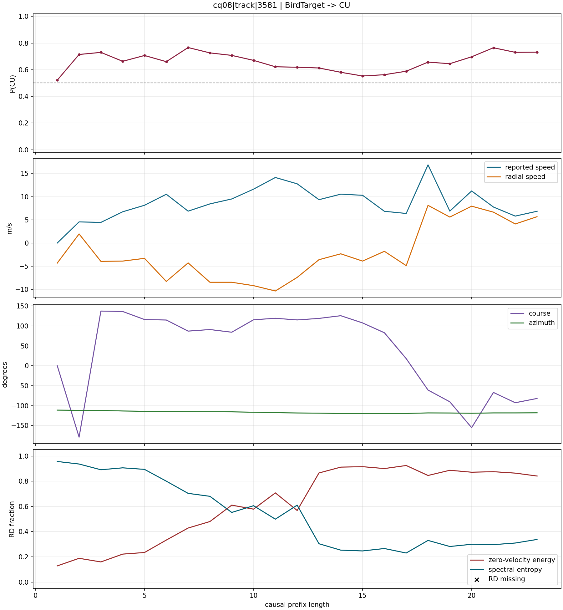
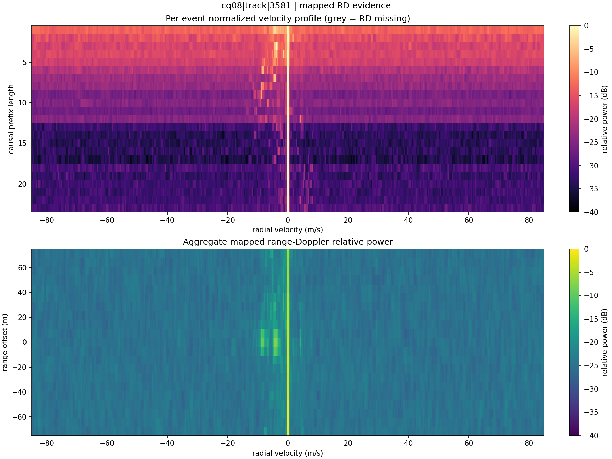
event CSV | parent JSON
Source files
{
"track_csv": "F:\\Project\\RadarInsight\\data\\processed\\cq08_tracks\\cq08__track__3581.csv",
"cq08_track_file": "F:\\Project\\RadarInsight\\OriData\\23\\CQ-08\\航迹\\Tracks_3581_3_23.txt",
"cq08_point_file": "F:\\Project\\RadarInsight\\OriData\\23\\CQ-08\\点迹\\PointTracks_3581_3_23.txt",
"cq08_raw_echo_file": "F:\\Project\\RadarInsight\\OriData\\23\\CQ-08\\原始回波\\3581_Label_3.dat",
"rd_tensor": "F:\\Project\\RadarInsight\\data\\processed\\cq08_rd_physical_canonical_v3_1\\cq08__track__3581_rd_tensor.npz",
"rd_mat_files": [
"F:\\Project\\RadarInsight\\OriData\\23\\CQ-08\\MAT\\20250616134454_DAUR_RD_Bird_0001_3581.mat",
"F:\\Project\\RadarInsight\\OriData\\23\\CQ-08\\MAT\\20250616134454_DAUR_RD_Bird_0002_3581.mat",
"F:\\Project\\RadarInsight\\OriData\\23\\CQ-08\\MAT\\20250616134454_DAUR_RD_Bird_0003_3581.mat",
"F:\\Project\\RadarInsight\\OriData\\23\\CQ-08\\MAT\\20250616134454_DAUR_RD_Bird_0004_3581.mat",
"F:\\Project\\RadarInsight\\OriData\\23\\CQ-08\\MAT\\20250616134454_DAUR_RD_Bird_0005_3581.mat",
"F:\\Project\\RadarInsight\\OriData\\23\\CQ-08\\MAT\\20250616134454_DAUR_RD_Bird_0006_3581.mat",
"F:\\Project\\RadarInsight\\OriData\\23\\CQ-08\\MAT\\20250616134454_DAUR_RD_Bird_0007_3581.mat",
"F:\\Project\\RadarInsight\\OriData\\23\\CQ-08\\MAT\\20250616134454_DAUR_RD_Bird_0008_3581.mat",
"F:\\Project\\RadarInsight\\OriData\\23\\CQ-08\\MAT\\20250616134454_DAUR_RD_Bird_0009_3581.mat",
"F:\\Project\\RadarInsight\\OriData\\23\\CQ-08\\MAT\\20250616134454_DAUR_RD_Bird_0010_3581.mat",
"F:\\Project\\RadarInsight\\OriData\\23\\CQ-08\\MAT\\20250616134454_DAUR_RD_Bird_0011_3581.mat",
"F:\\Project\\RadarInsight\\OriData\\23\\CQ-08\\MAT\\20250616134454_DAUR_RD_Bird_0012_3581.mat",
"F:\\Project\\RadarInsight\\OriData\\23\\CQ-08\\MAT\\20250616134454_DAUR_RD_Bird_0013_3581.mat",
"F:\\Project\\RadarInsight\\OriData\\23\\CQ-08\\MAT\\20250616134454_DAUR_RD_Bird_0014_3581.mat",
"F:\\Project\\RadarInsight\\OriData\\23\\CQ-08\\MAT\\20250616134454_DAUR_RD_Bird_0015_3581.mat",
"F:\\Project\\RadarInsight\\OriData\\23\\CQ-08\\MAT\\20250616134454_DAUR_RD_Bird_0016_3581.mat",
"F:\\Project\\RadarInsight\\OriData\\23\\CQ-08\\MAT\\20250616134454_DAUR_RD_Bird_0017_3581.mat",
"F:\\Project\\RadarInsight\\OriData\\23\\CQ-08\\MAT\\20250616134454_DAUR_RD_Bird_0018_3581.mat",
"F:\\Project\\RadarInsight\\OriData\\23\\CQ-08\\MAT\\20250616134454_DAUR_RD_Bird_0019_3581.mat",
"F:\\Project\\RadarInsight\\OriData\\23\\CQ-08\\MAT\\20250616134454_DAUR_RD_Bird_0020_3581.mat",
"F:\\Project\\RadarInsight\\OriData\\23\\CQ-08\\MAT\\20250616134454_DAUR_RD_Bird_0021_3581.mat",
"F:\\Project\\RadarInsight\\OriData\\23\\CQ-08\\MAT\\20250616134454_DAUR_RD_Bird_0022_3581.mat",
"F:\\Project\\RadarInsight\\OriData\\23\\CQ-08\\MAT\\20250616134454_DAUR_RD_Bird_0023_3581.mat",
"F:\\Project\\RadarInsight\\OriData\\23\\CQ-08\\MAT\\20250616134454_DAUR_RD_Bird_0024_3581.mat",
"F:\\Project\\RadarInsight\\OriData\\23\\CQ-08\\MAT\\20250616134454_DAUR_RD_Bird_0025_3581.mat",
"F:\\Project\\RadarInsight\\OriData\\23\\CQ-08\\MAT\\20250616134454_DAUR_RD_Bird_0026_3581.mat",
"F:\\Project\\RadarInsight\\OriData\\23\\CQ-08\\MAT\\20250616134454_DAUR_RD_Bird_0027_3581.mat",
"F:\\Project\\RadarInsight\\OriData\\23\\CQ-08\\MAT\\20250616134454_DAUR_RD_Bird_0028_3581.mat",
"F:\\Project\\RadarInsight\\OriData\\23\\CQ-08\\MAT\\20250616134454_DAUR_RD_Bird_0029_3581.mat",
"F:\\Project\\RadarInsight\\OriData\\23\\CQ-08\\MAT\\20250616134454_DAUR_RD_Bird_0030_3581.mat",
"F:\\Project\\RadarInsight\\OriData\\23\\CQ-08\\MAT\\20250616134454_DAUR_RD_Bird_0031_3581.mat",
"F:\\Project\\RadarInsight\\OriData\\23\\CQ-08\\MAT\\20250616134454_DAUR_RD_Bird_0032_3581.mat",
"F:\\Project\\RadarInsight\\OriData\\23\\CQ-08\\MAT\\20250616134454_DAUR_RD_Bird_0033_3581.mat",
"F:\\Project\\RadarInsight\\OriData\\23\\CQ-08\\MAT\\20250616134454_DAUR_RD_Bird_0034_3581.mat",
"F:\\Project\\RadarInsight\\OriData\\23\\CQ-08\\MAT\\20250616134454_DAUR_RD_Bird_0035_3581.mat",
"F:\\Project\\RadarInsight\\OriData\\23\\CQ-08\\MAT\\20250616134454_DAUR_RD_Bird_0036_3581.mat",
"F:\\Project\\RadarInsight\\OriData\\23\\CQ-08\\MAT\\20250616134454_DAUR_RD_Bird_0037_3581.mat",
"F:\\Project\\RadarInsight\\OriData\\23\\CQ-08\\MAT\\20250616134454_DAUR_RD_Bird_0038_3581.mat",
"F:\\Project\\RadarInsight\\OriData\\23\\CQ-08\\MAT\\20250616134454_DAUR_RD_Bird_0039_3581.mat",
"F:\\Project\\RadarInsight\\OriData\\23\\CQ-08\\MAT\\20250616134454_DAUR_RD_Bird_0040_3581.mat",
"F:\\Project\\RadarInsight\\OriData\\23\\CQ-08\\MAT\\20250616134454_DAUR_RD_Bird_0041_3581.mat",
"F:\\Project\\RadarInsight\\OriData\\23\\CQ-08\\MAT\\20250616134454_DAUR_RD_Bird_0042_3581.mat",
"F:\\Project\\RadarInsight\\OriData\\23\\CQ-08\\MAT\\20250616134454_DAUR_RD_Bird_0043_3581.mat",
"F:\\Project\\RadarInsight\\OriData\\23\\CQ-08\\MAT\\20250616134454_DAUR_RD_Bird_0044_3581.mat",
"F:\\Project\\RadarInsight\\OriData\\23\\CQ-08\\MAT\\20250616134454_DAUR_RD_Bird_0045_3581.mat",
"F:\\Project\\RadarInsight\\OriData\\23\\CQ-08\\MAT\\20250616134454_DAUR_RD_Bird_0046_3581.mat",
"F:\\Project\\RadarInsight\\OriData\\23\\CQ-08\\MAT\\20250616134454_DAUR_RD_Bird_0047_3581.mat",
"F:\\Project\\RadarInsight\\OriData\\23\\CQ-08\\MAT\\20250616134454_DAUR_RD_Bird_0048_3581.mat",
"F:\\Project\\RadarInsight\\OriData\\23\\CQ-08\\MAT\\20250616134454_DAUR_RD_Bird_0049_3581.mat",
"F:\\Project\\RadarInsight\\OriData\\23\\CQ-08\\MAT\\20250616134454_DAUR_RD_Bird_0050_3581.mat",
"F:\\Project\\RadarInsight\\OriData\\23\\CQ-08\\MAT\\20250616134454_DAUR_RD_Bird_0051_3581.mat",
"F:\\Project\\RadarInsight\\OriData\\23\\CQ-08\\MAT\\20250616134454_DAUR_RD_Bird_0052_3581.mat",
"F:\\Project\\RadarInsight\\OriData\\23\\CQ-08\\MAT\\20250616134454_DAUR_RD_Bird_0053_3581.mat",
"F:\\Project\\RadarInsight\\OriData\\23\\CQ-08\\MAT\\20250616134454_DAUR_RD_Bird_0054_3581.mat",
"F:\\Project\\RadarInsight\\OriData\\23\\CQ-08\\MAT\\20250616134454_DAUR_RD_Bird_0055_3581.mat",
"F:\\Project\\RadarInsight\\OriData\\23\\CQ-08\\MAT\\20250616134454_DAUR_RD_Bird_0056_3581.mat",
"F:\\Project\\RadarInsight\\OriData\\23\\CQ-08\\MAT\\20250616134454_DAUR_RD_Bird_0057_3581.mat",
"F:\\Project\\RadarInsight\\OriData\\23\\CQ-08\\MAT\\20250616134454_DAUR_RD_Bird_0058_3581.mat",
"F:\\Project\\RadarInsight\\OriData\\23\\CQ-08\\MAT\\20250616134454_DAUR_RD_Bird_0059_3581.mat",
"F:\\Project\\RadarInsight\\OriData\\23\\CQ-08\\MAT\\20250616134454_DAUR_RD_Bird_0060_3581.mat",
"F:\\Project\\RadarInsight\\OriData\\23\\CQ-08\\MAT\\20250616134454_DAUR_RD_Bird_0061_3581.mat",
"F:\\Project\\RadarInsight\\OriData\\23\\CQ-08\\MAT\\20250616134454_DAUR_RD_Bird_0062_3581.mat",
"F:\\Project\\RadarInsight\\OriData\\23\\CQ-08\\MAT\\20250616134454_DAUR_RD_Bird_0063_3581.mat",
"F:\\Project\\RadarInsight\\OriData\\23\\CQ-08\\MAT\\20250616134454_DAUR_RD_Bird_0064_3581.mat",
"F:\\Project\\RadarInsight\\OriData\\23\\CQ-08\\MAT\\20250616134454_DAUR_RD_Bird_0065_3581.mat",
"F:\\Project\\RadarInsight\\OriData\\23\\CQ-08\\MAT\\20250616134454_DAUR_RD_Bird_0066_3581.mat",
"F:\\Project\\RadarInsight\\OriData\\23\\CQ-08\\MAT\\20250616134454_DAUR_RD_Bird_0067_3581.mat",
"F:\\Project\\RadarInsight\\OriData\\23\\CQ-08\\MAT\\20250616134454_DAUR_RD_Bird_0068_3581.mat",
"F:\\Project\\RadarInsight\\OriData\\23\\CQ-08\\MAT\\20250616134454_DAUR_RD_Bird_0069_3581.mat",
"F:\\Project\\RadarInsight\\OriData\\23\\CQ-08\\MAT\\20250616134454_DAUR_RD_Bird_0070_3581.mat",
"F:\\Project\\RadarInsight\\OriData\\23\\CQ-08\\MAT\\20250616134454_DAUR_RD_Bird_0071_3581.mat",
"F:\\Project\\RadarInsight\\OriData\\23\\CQ-08\\MAT\\20250616134454_DAUR_RD_Bird_0072_3581.mat",
"F:\\Project\\RadarInsight\\OriData\\23\\CQ-08\\MAT\\20250616134454_DAUR_RD_Bird_0073_3581.mat",
"F:\\Project\\RadarInsight\\OriData\\23\\CQ-08\\MAT\\20250616134454_DAUR_RD_Bird_0074_3581.mat",
"F:\\Project\\RadarInsight\\OriData\\23\\CQ-08\\MAT\\20250616134454_DAUR_RD_Bird_0075_3581.mat",
"F:\\Project\\RadarInsight\\OriData\\23\\CQ-08\\MAT\\20250616134454_DAUR_RD_Bird_0076_3581.mat",
"F:\\Project\\RadarInsight\\OriData\\23\\CQ-08\\MAT\\20250616134454_DAUR_RD_Bird_0077_3581.mat",
"F:\\Project\\RadarInsight\\OriData\\23\\CQ-08\\MAT\\20250616134454_DAUR_RD_Bird_0078_3581.mat",
"F:\\Project\\RadarInsight\\OriData\\23\\CQ-08\\MAT\\20250616134454_DAUR_RD_Bird_0079_3581.mat",
"F:\\Project\\RadarInsight\\OriData\\23\\CQ-08\\MAT\\20250616134454_DAUR_RD_Bird_0080_3581.mat",
"F:\\Project\\RadarInsight\\OriData\\23\\CQ-08\\MAT\\20250616134454_DAUR_RD_Bird_0081_3581.mat",
"F:\\Project\\RadarInsight\\OriData\\23\\CQ-08\\MAT\\20250616134454_DAUR_RD_Bird_0082_3581.mat",
"F:\\Project\\RadarInsight\\OriData\\23\\CQ-08\\MAT\\20250616134454_DAUR_RD_Bird_0083_3581.mat",
"F:\\Project\\RadarInsight\\OriData\\23\\CQ-08\\MAT\\20250616134454_DAUR_RD_Bird_0084_3581.mat"
]
}cq08|track|4171
Current label: UnknownTarget V10 final route: DBB confidence: 0.8970
Events: 13 RD: 13/13 (full)
Automatic attention flags: R, O, U, T, E, _, C, O, N, S, T, A, N, T, _, F, R, O, M, _, F, I, R, S, T, _, P, R, E, F, I, X, ;, U, N, K, N, O, W, N, _, C, L, O, S, E, D, _, S, E, T, _, N, O, T, _, R, E, J, E, C, T
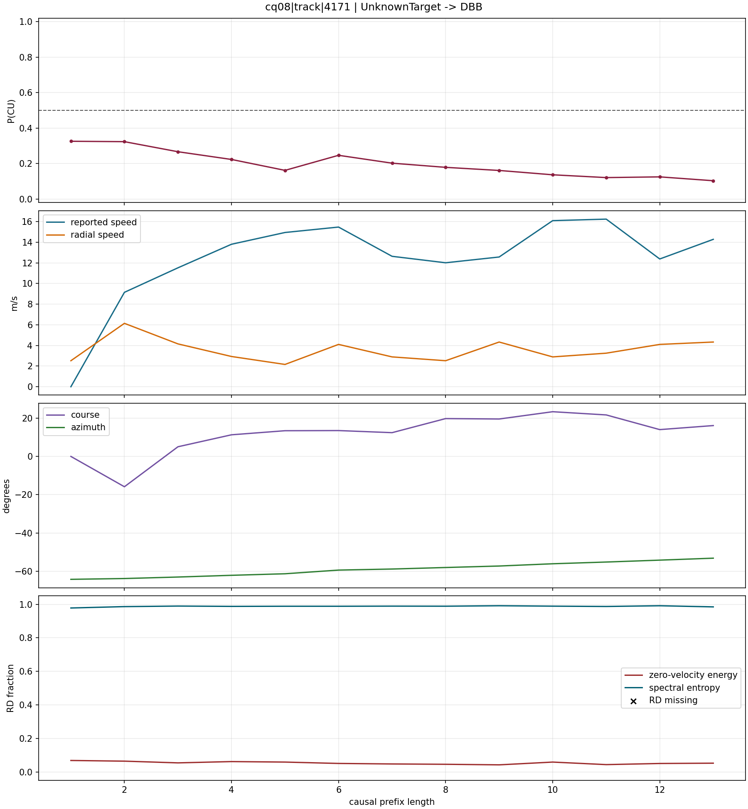
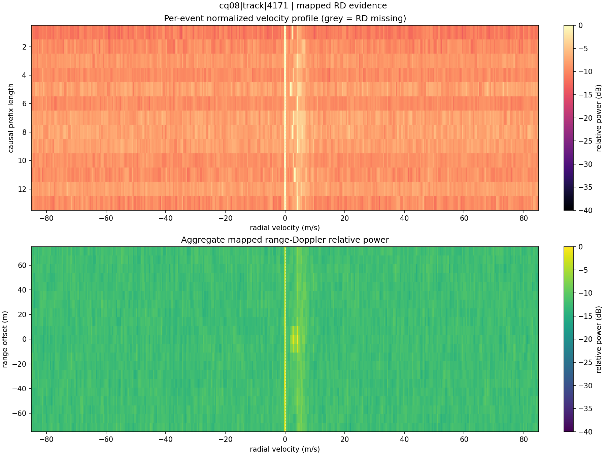
event CSV | parent JSON
Source files
{
"track_csv": "F:\\Project\\RadarInsight\\data\\processed\\cq08_tracks\\cq08__track__4171.csv",
"cq08_track_file": "F:\\Project\\RadarInsight\\OriData\\23\\CQ-08\\航迹\\Tracks_4171_6_13.txt",
"cq08_point_file": "F:\\Project\\RadarInsight\\OriData\\23\\CQ-08\\点迹\\PointTracks_4171_6_13.txt",
"cq08_raw_echo_file": "F:\\Project\\RadarInsight\\OriData\\23\\CQ-08\\原始回波\\4171_Label_6.dat",
"rd_tensor": "F:\\Project\\RadarInsight\\data\\processed\\cq08_rd_physical_canonical_v3_1\\cq08__track__4171_rd_tensor.npz",
"rd_mat_files": [
"F:\\Project\\RadarInsight\\OriData\\23\\CQ-08\\MAT\\20250616155818_DAUR_RD_Other_0001_4171.mat",
"F:\\Project\\RadarInsight\\OriData\\23\\CQ-08\\MAT\\20250616155818_DAUR_RD_Other_0002_4171.mat",
"F:\\Project\\RadarInsight\\OriData\\23\\CQ-08\\MAT\\20250616155818_DAUR_RD_Other_0003_4171.mat",
"F:\\Project\\RadarInsight\\OriData\\23\\CQ-08\\MAT\\20250616155818_DAUR_RD_Other_0004_4171.mat",
"F:\\Project\\RadarInsight\\OriData\\23\\CQ-08\\MAT\\20250616155818_DAUR_RD_Other_0005_4171.mat",
"F:\\Project\\RadarInsight\\OriData\\23\\CQ-08\\MAT\\20250616155818_DAUR_RD_Other_0006_4171.mat",
"F:\\Project\\RadarInsight\\OriData\\23\\CQ-08\\MAT\\20250616155818_DAUR_RD_Other_0007_4171.mat",
"F:\\Project\\RadarInsight\\OriData\\23\\CQ-08\\MAT\\20250616155818_DAUR_RD_Other_0008_4171.mat",
"F:\\Project\\RadarInsight\\OriData\\23\\CQ-08\\MAT\\20250616155818_DAUR_RD_Other_0009_4171.mat",
"F:\\Project\\RadarInsight\\OriData\\23\\CQ-08\\MAT\\20250616155818_DAUR_RD_Other_0010_4171.mat",
"F:\\Project\\RadarInsight\\OriData\\23\\CQ-08\\MAT\\20250616155818_DAUR_RD_Other_0011_4171.mat",
"F:\\Project\\RadarInsight\\OriData\\23\\CQ-08\\MAT\\20250616155818_DAUR_RD_Other_0012_4171.mat",
"F:\\Project\\RadarInsight\\OriData\\23\\CQ-08\\MAT\\20250616155818_DAUR_RD_Other_0013_4171.mat",
"F:\\Project\\RadarInsight\\OriData\\23\\CQ-08\\MAT\\20250616155818_DAUR_RD_Other_0014_4171.mat",
"F:\\Project\\RadarInsight\\OriData\\23\\CQ-08\\MAT\\20250616155818_DAUR_RD_Other_0015_4171.mat",
"F:\\Project\\RadarInsight\\OriData\\23\\CQ-08\\MAT\\20250616155818_DAUR_RD_Other_0016_4171.mat",
"F:\\Project\\RadarInsight\\OriData\\23\\CQ-08\\MAT\\20250616155818_DAUR_RD_Other_0017_4171.mat",
"F:\\Project\\RadarInsight\\OriData\\23\\CQ-08\\MAT\\20250616155818_DAUR_RD_Other_0018_4171.mat",
"F:\\Project\\RadarInsight\\OriData\\23\\CQ-08\\MAT\\20250616155818_DAUR_RD_Other_0019_4171.mat",
"F:\\Project\\RadarInsight\\OriData\\23\\CQ-08\\MAT\\20250616155818_DAUR_RD_Other_0020_4171.mat",
"F:\\Project\\RadarInsight\\OriData\\23\\CQ-08\\MAT\\20250616155818_DAUR_RD_Other_0021_4171.mat",
"F:\\Project\\RadarInsight\\OriData\\23\\CQ-08\\MAT\\20250616155818_DAUR_RD_Other_0022_4171.mat",
"F:\\Project\\RadarInsight\\OriData\\23\\CQ-08\\MAT\\20250616155818_DAUR_RD_Other_0023_4171.mat",
"F:\\Project\\RadarInsight\\OriData\\23\\CQ-08\\MAT\\20250616155818_DAUR_RD_Other_0024_4171.mat",
"F:\\Project\\RadarInsight\\OriData\\23\\CQ-08\\MAT\\20250616155818_DAUR_RD_Other_0025_4171.mat",
"F:\\Project\\RadarInsight\\OriData\\23\\CQ-08\\MAT\\20250616155818_DAUR_RD_Other_0026_4171.mat",
"F:\\Project\\RadarInsight\\OriData\\23\\CQ-08\\MAT\\20250616155818_DAUR_RD_Other_0027_4171.mat",
"F:\\Project\\RadarInsight\\OriData\\23\\CQ-08\\MAT\\20250616155818_DAUR_RD_Other_0028_4171.mat",
"F:\\Project\\RadarInsight\\OriData\\23\\CQ-08\\MAT\\20250616155818_DAUR_RD_Other_0029_4171.mat",
"F:\\Project\\RadarInsight\\OriData\\23\\CQ-08\\MAT\\20250616155818_DAUR_RD_Other_0030_4171.mat",
"F:\\Project\\RadarInsight\\OriData\\23\\CQ-08\\MAT\\20250616155818_DAUR_RD_Other_0031_4171.mat",
"F:\\Project\\RadarInsight\\OriData\\23\\CQ-08\\MAT\\20250616155818_DAUR_RD_Other_0032_4171.mat",
"F:\\Project\\RadarInsight\\OriData\\23\\CQ-08\\MAT\\20250616155818_DAUR_RD_Other_0033_4171.mat",
"F:\\Project\\RadarInsight\\OriData\\23\\CQ-08\\MAT\\20250616155818_DAUR_RD_Other_0034_4171.mat",
"F:\\Project\\RadarInsight\\OriData\\23\\CQ-08\\MAT\\20250616155818_DAUR_RD_Other_0035_4171.mat",
"F:\\Project\\RadarInsight\\OriData\\23\\CQ-08\\MAT\\20250616155818_DAUR_RD_Other_0036_4171.mat",
"F:\\Project\\RadarInsight\\OriData\\23\\CQ-08\\MAT\\20250616155818_DAUR_RD_Other_0037_4171.mat",
"F:\\Project\\RadarInsight\\OriData\\23\\CQ-08\\MAT\\20250616155818_DAUR_RD_Other_0038_4171.mat",
"F:\\Project\\RadarInsight\\OriData\\23\\CQ-08\\MAT\\20250616155818_DAUR_RD_Other_0039_4171.mat"
]
}